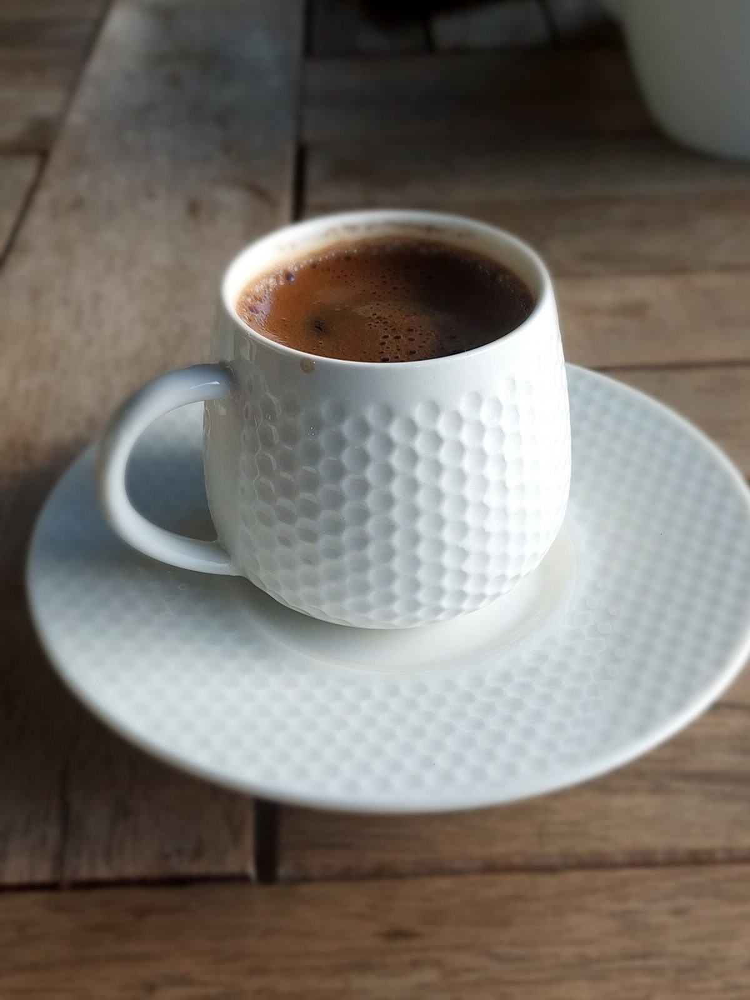
دليل عالم القهوة
عن الكتاب About this book
الكتاب ده معمول لأي حد بيقف قدام منيو الكافيه ومش عارف يختار: إيه الفرق بين اللاتيه والكابتشينو؟ يعني إيه فلات وايت؟ والـ V60 ده إيه؟ هنبدأ من الصفر خالص — من شجرة البن — ونطلع خطوة خطوة لحد ما تفهم لغة الباريستا وتدوق القهوة زي المحترفين.
لو مستعجل
لو عايز تفهم المشروبات
لو بتعمل قهوة في البيت
لو عايز تبقى «خبير»
إزاي تقرا الصفحات
| الحاجة | معناها |
|---|---|
| الرسم المقطعي للكوباية | بيوضح طبقات المشروب (إسبريسو، لبن، رغوة...) بشكل تقريبي — مش مقاسات دقيقة. |
| النقط ●●●○○ | مقياس نسبي من 5 للمقارنة بين العناصر في نفس الفصل. |
| «≈» أو «حوالي» | رقم شائع وتقريبي — الوصفات بتختلف من كافيه لكافيه. |
| مربع «في مصر» | معلومة خاصة بالاستخدام والمصطلحات في مصر. |
الفهرس Contents
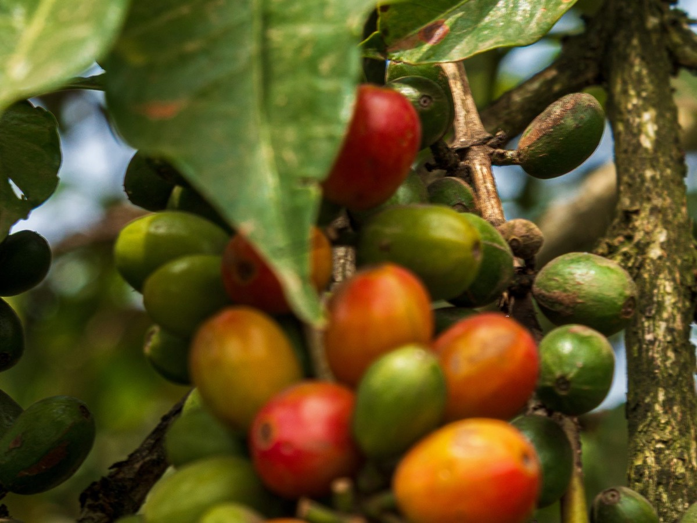
مقدمة إلى عالم القهوة
- يعني إيه قهوة؟
- حبوب البن جاية منين؟
- تشريح ثمرة البن
- من الثمرة للحبة الجاهزة للتحميص
- البن الأخضر والبن المحمَّص
- رحلة القهوة من المزرعة للكوباية
يعني إيه قهوة؟ What is Coffee?
القهوة مشروب بيتعمل من بذور ثمرة شجرة اسمها البن (Coffea). البذور دي بعد ما تتنضف وتنشف بنحمّصها، وبعدين نطحنها، ونستخلص طعمها بالمية السخنة أو الباردة. يعني اللي إحنا بنسميه «حبة بن» هو في الحقيقة بذرة جوه ثمرة.
أصل شجرة الأرابيكا من مرتفعات إثيوبيا، وأقدم دليل موثّق على شرب القهوة كمشروب جاي من اليمن في القرن الخامس عشر، لما الصوفية كانوا بيشربوها عشان تساعدهم على السهر. ومن ميناء المخا (Mocha) في اليمن اتنقلت لمصر والشام وتركيا، وبعدين لأوروبا والعالم كله.
حبوب البن جاية منين؟ Where does coffee come from?
شجرة البن بتحب الجو الدافي والمطر المنتظم، فبتتزرع في الحزام اللي حوالين خط الاستوا بين مدار السرطان ومدار الجدي، واسمه «حزام البن» (Coffee Belt). أكبر الدول المنتجة: البرازيل، فيتنام، كولومبيا، إندونيسيا، وإثيوبيا.
الشجرة بتطلّع ورد أبيض ريحته شبه الياسمين، والورد ده بيتحول لثمار خضرا بتحمرّ لما تستوي. كل ثمرة جواها غالباً بذرتين وشّهم لبعض — وده سبب إن حبة البن ليها جنب مسطّح وفيها خط في النص.
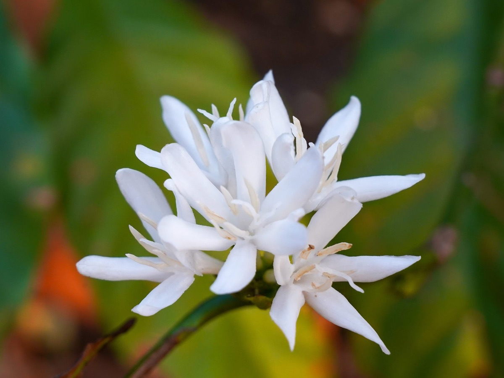
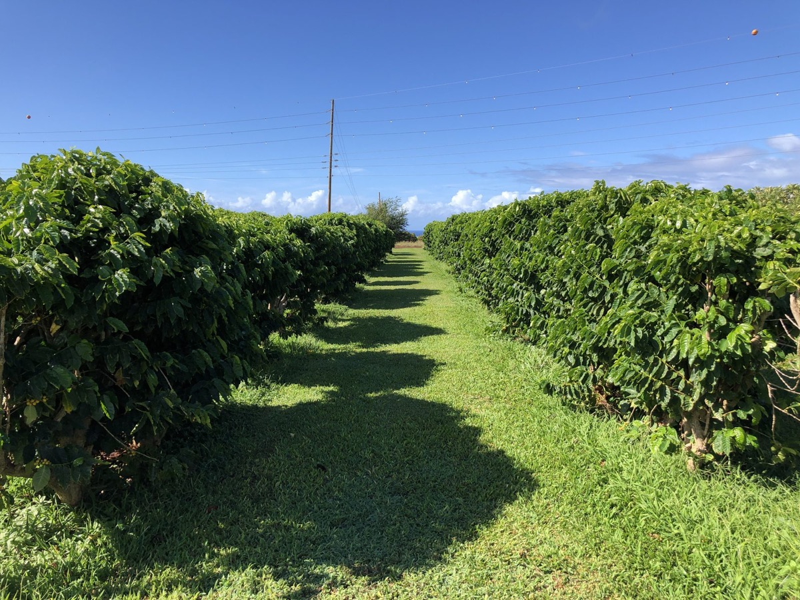
تشريح ثمرة البن Coffee Cherry Anatomy
لما تقطع ثمرة البن بالعرض هتلاقي طبقات كتير فوق بعض. فهم الطبقات دي مهم جداً، لأن طرق «معالجة البن» اللي هنشرحها في الفصل الرابع هي ببساطة: إمتى وإزاي بنشيل كل طبقة.
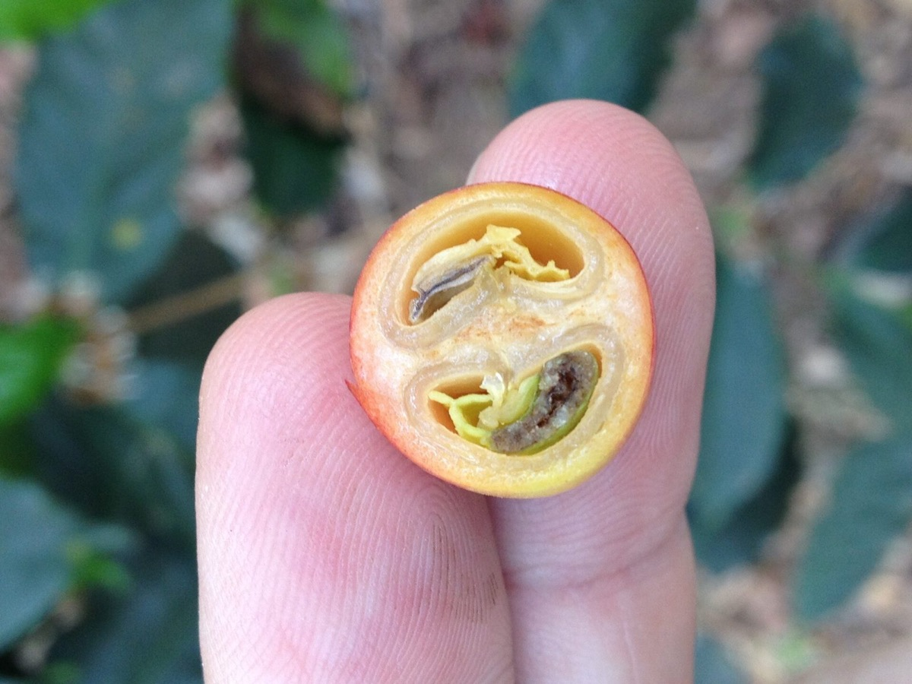
من الثمرة لحبة جاهزة للتحميص From cherry to roastable bean
الرحلة دي فيها مراحل كتير، وكل مرحلة ممكن تحسّن طعم القهوة أو تبوّظه. الرسم ده بيلخّصها:
| المرحلة | بيحصل فيها إيه؟ | ليه مهمة؟ |
|---|---|---|
| 1. الزراعة | الشجرة بتحتاج حوالي 3–4 سنين عشان تبدأ تطرح. | الارتفاع والتربة والجو بيأثروا جداً على الطعم. |
| 2. القطف | قطف الثمار الحمرا الناضجة — يدوي أو بالمكن. | الثمرة الناضجة = سكريات أكتر وطعم أحلى. |
| 3. المعالجة | فصل البذرة عن القشرة واللب (مغسولة، طبيعية، هَني...). | بتأثر مباشرة على النكهة (الفصل الرابع). |
| 4. التجفيف | تنشيف البذور لحد رطوبة حوالي 10–12%. | عشان تتخزن من غير عفن. |
| 5. التقشير والفرز | شيل غلاف الرَّق، وفرز الحبوب حسب الحجم والعيوب. | البن السليم = طعم نضيف. |
| 6. التحميص | تسخين البن الأخضر لحد ما يبني ويطلّع ريحته. | هنا بتتكون معظم نكهات القهوة (الفصل الثالث). |
| 7. الطحن | تكسير الحبوب لدرجة تناسب طريقة التحضير. | الطحن الغلط = قهوة مرّة أو مايّة. |
| 8. التحضير | استخلاص الطعم بالمية. | آخر خطوة — وممكن تبوّظ كل اللي فات! |
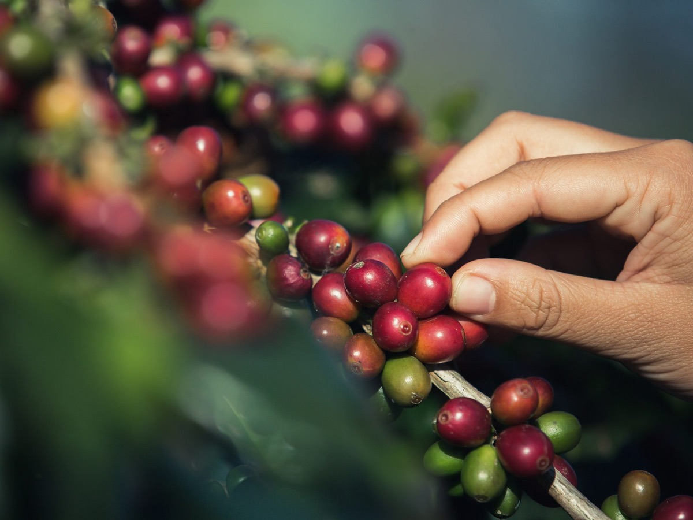
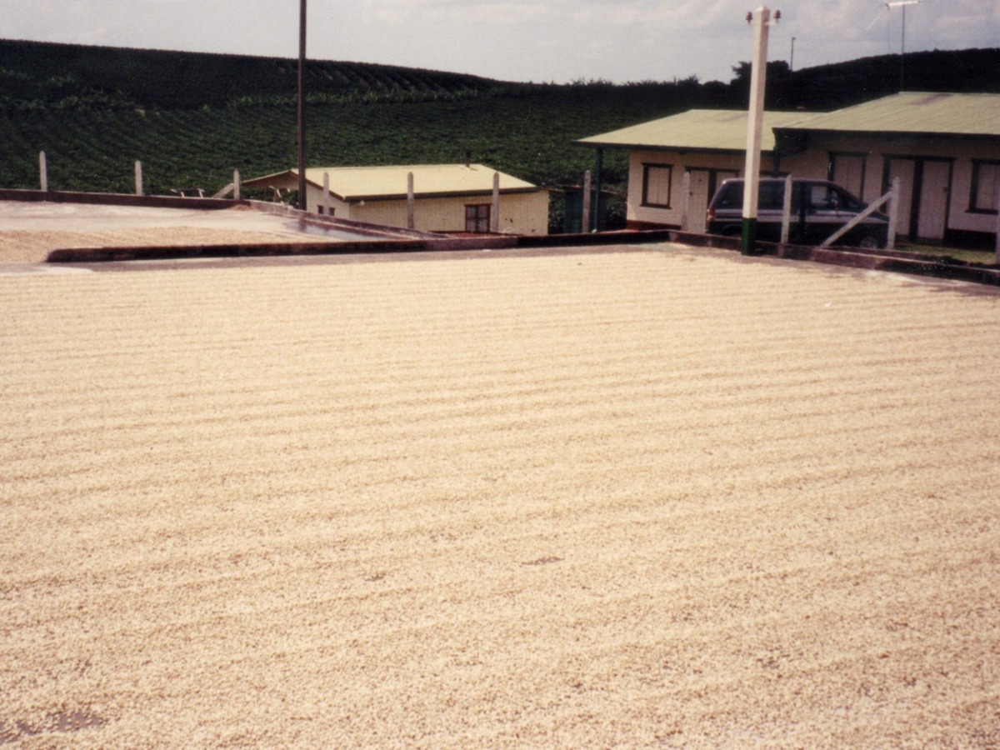
البن الأخضر والبن المحمَّص Green vs Roasted Coffee
«البن الأخضر» (Green Coffee) هو البذرة بعد ما اتنضفت ونشفت، وقبل التحميص. ده الشكل اللي بيتشحن بيه البن بين الدول. أما «البن المحمَّص» (Roasted Coffee) فهو اللي إحنا بنشتريه ونطحنه.
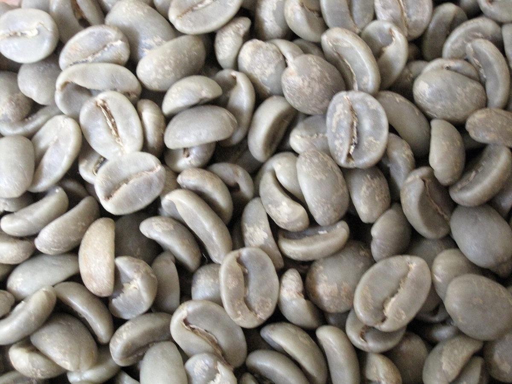
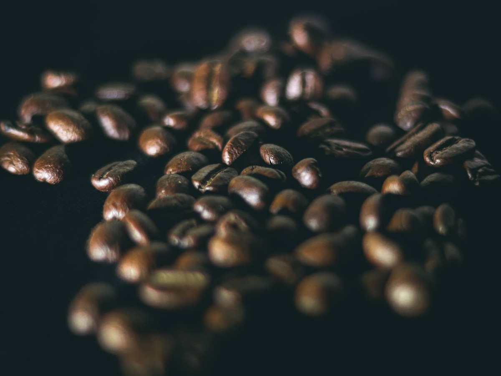
| وجه المقارنة | البن الأخضر Green | البن المحمَّص Roasted |
|---|---|---|
| اللون | أخضر فاتح لرمادي مخضر | من بني فاتح لبني غامق جداً |
| الريحة | عشبية، شبه البقول أو القش | ريحة القهوة: كراميل، شوكولاتة، فواكه... |
| الصلابة | صلب جداً وصعب يتطحن | هش وسهل الطحن |
| الحجم والوزن | أصغر وأتقل | بينفش ويكبر حوالي 50–100%، ويخسر حوالي 12–20% من وزنه (معظمه مية) |
| الصلاحية | يتحمل شهور طويلة لو اتخزن صح (مكان ناشف وبعيد عن الشمس) | أحلى طعم غالباً في أول أسابيع بعد التحميص، وبعد الطحن ريحته بتروح بسرعة |
| الاستخدام | للمحمصين بس | للتحضير مباشرة بعد الطحن |
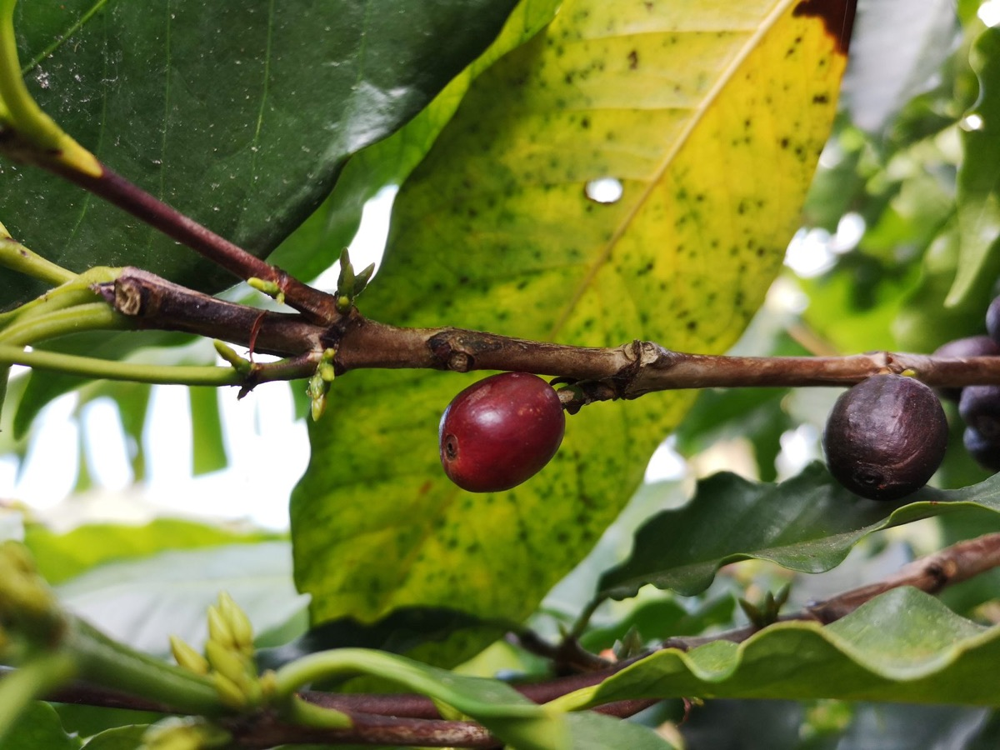
أنواع حبوب البن
- أرابيكا Arabica
- روبوستا Robusta
- ليبيريكا Liberica
- إكسيلسا Excelsa
- جدول مقارنة بين الأنواع
- Single Origin و Blend
- Specialty و Commercial
أرابيكا Arabica
الأرابيكا هي «نجمة» عالم القهوة، وبتمثّل تقريباً 60% من إنتاج البن في العالم. أصلها من إثيوبيا، وبتتزرع في الأماكن العالية (غالباً من 600 لأكتر من 2000 متر فوق سطح البحر)، والارتفاع ده بيخلي الثمرة تستوي ببطء فتتكوّن فيها سكريات ونكهات أكتر.
أرابيكا Arabica
روبوستا Robusta
الروبوستا هي النوع التاني الأشهر، وبتمثّل حوالي 40% من الإنتاج العالمي، وأكبر منتج ليها فيتنام. اسمها جاي من كلمة Robust يعني «قوي/متين» — لأن شجرتها قوية وبتستحمل الحر والأمراض، وبتتزرع في أماكن واطية.
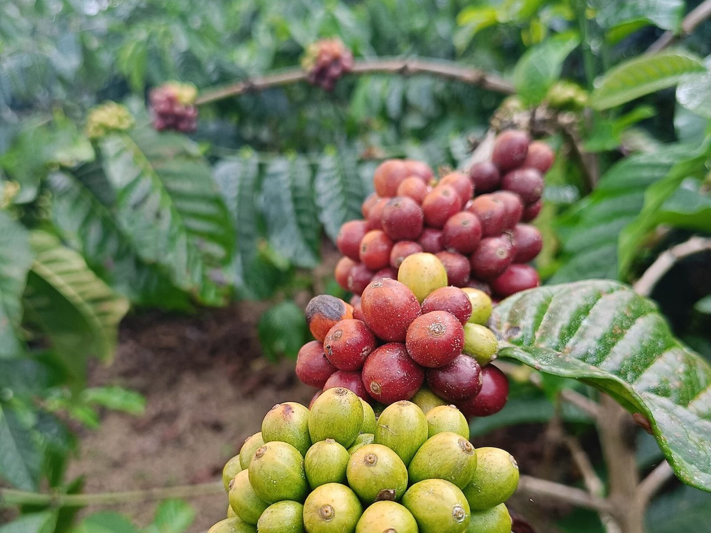
روبوستا Robusta
ليبيريكا Liberica
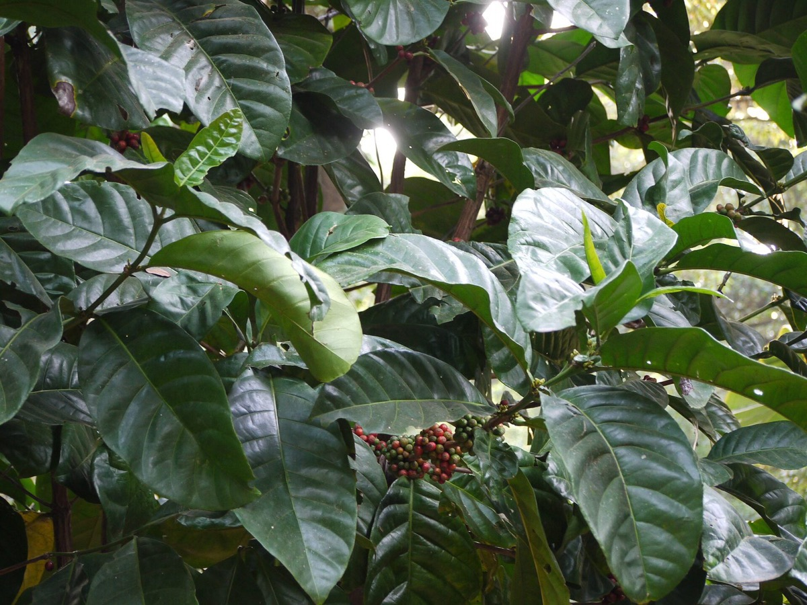
ليبيريكا Liberica
إكسيلسا Excelsa
إكسيلسا Excelsa
جدول مقارنة بين الأنواع Species Comparison
| أرابيكا | روبوستا | ليبيريكا | إكسيلسا | |
|---|---|---|---|---|
| الاسم العلمي | Coffea arabica | Coffea canephora | Coffea liberica | C. liberica var. dewevrei |
| نصيبها من الإنتاج | ≈ 60% | ≈ 40% | أقل من 2% (مع الإكسيلسا) | صغير جداً |
| الارتفاع | عالي (≈ 600–2000+ م) | واطي (≈ 0–800 م) | واطي | واطي لمتوسط |
| الكافيين التقريبي | ≈ 1.2–1.5% | ≈ 2.2–2.7% | قريب من الأرابيكا أو أقل | قريب من الأرابيكا أو أقل |
| الطعم | حلو، معقّد، فواكه وزهور وشوكولاتة | قوي ومرّ، خشبي ومكسرات | مدخّن وخشبي مع ريحة فواكه | فاكهي وحامض مع عمق غامق |
| الحموضة | متوسطة لعالية | منخفضة | منخفضة لمتوسطة | متوسطة |
| القوام | متوسط | تقيل | تقيل | متوسط |
| شكل الحبة | بيضاوي، خط متعرّج | صغير ومدوّر، خط مستقيم | كبير وغير منتظم | متوسط لكبير، غير منتظم |
| تحمّل الشجرة | حساسة | قوية جداً | قوية | قوية |
| السعر | أعلى | أقل | متغيّر (نادرة) | متغيّر (نادرة) |
الأرقام دي تقريبية ومأخوذة من متوسطات منشورة؛ نسبة الكافيين والطعم بيتغيّروا حسب السلالة والمكان والتحميص.
Single Origin و Blend
| المصطلح | يعني إيه؟ | مثال |
|---|---|---|
| Single Origin (أصل واحد) | بن جاي من مصدر واحد: بلد واحد، أو منطقة، أو حتى مزرعة واحدة. هدفه إنك تدوق «بصمة» المكان ده. | Ethiopia Yirgacheffe أو Colombia Huila |
| Blend (خلطة) | خليط من أكتر من بن، معمول عشان يدي طعم متوازن وثابت طول السنة. | خلطة إسبريسو: برازيلي + كولومبي + شوية روبوستا |
Specialty و Commercial
| المصطلح | يعني إيه؟ | تعرفه إزاي؟ |
|---|---|---|
| Specialty Coffee (قهوة مختصة) | بن عالي الجودة. حسب نظام جمعية القهوة المختصة (SCA) لازم ياخد 80 من 100 أو أكتر في التقييم الحسي، وعيوبه قليلة جداً. | غالباً مكتوب عليه البلد والمنطقة والمعالجة والسلالة وتاريخ التحميص. |
| Commercial Coffee (قهوة تجارية) | بن بيتباع بكميات كبيرة وبسعر البورصة، والتركيز فيه على الكمية والسعر مش على النكهات الدقيقة. | معظم البن في السوبر ماركت، ومكتوب عليه اسم الماركة أكتر من تفاصيل المصدر. |
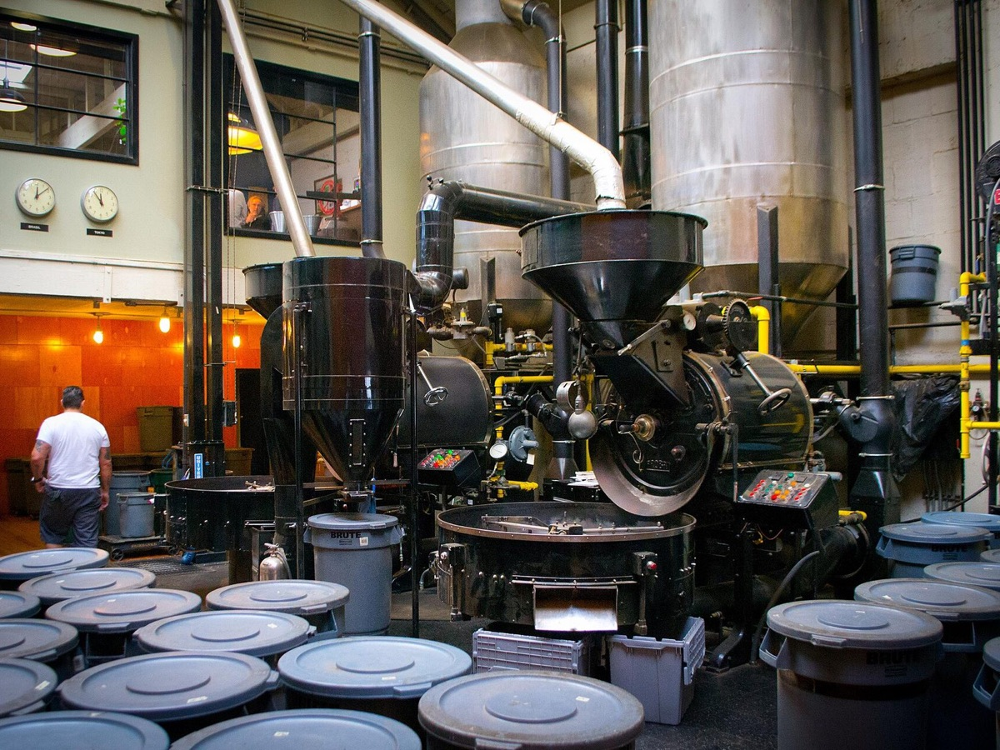
درجات تحميص البن
- البن الأخضر والدرجات الخمسة للتحميص
- لون وطعم وحموضة كل درجة
- الفرقعة الأولى والتانية
- Development Time و Roast Profile
- التحميص الناقص والزيادة
- Degassing: ليه البن محتاج يرتاح؟
التحميص بيعمل إيه؟ What roasting does
في المحمصة، البن بيتسخن لحد حوالي 190–240°C. المية اللي جوه الحبة بتتبخر، والسكريات بتتكرمل، وبيحصل تفاعل اسمه «تفاعل ميلارد» (Maillard Reaction) — نفس التفاعل اللي بيدي العيش المحمَّص والستيك لونهم وريحتهم. كل ما التحميص يطول، اللون يغمق، والحموضة تقل، والمرارة تزيد.
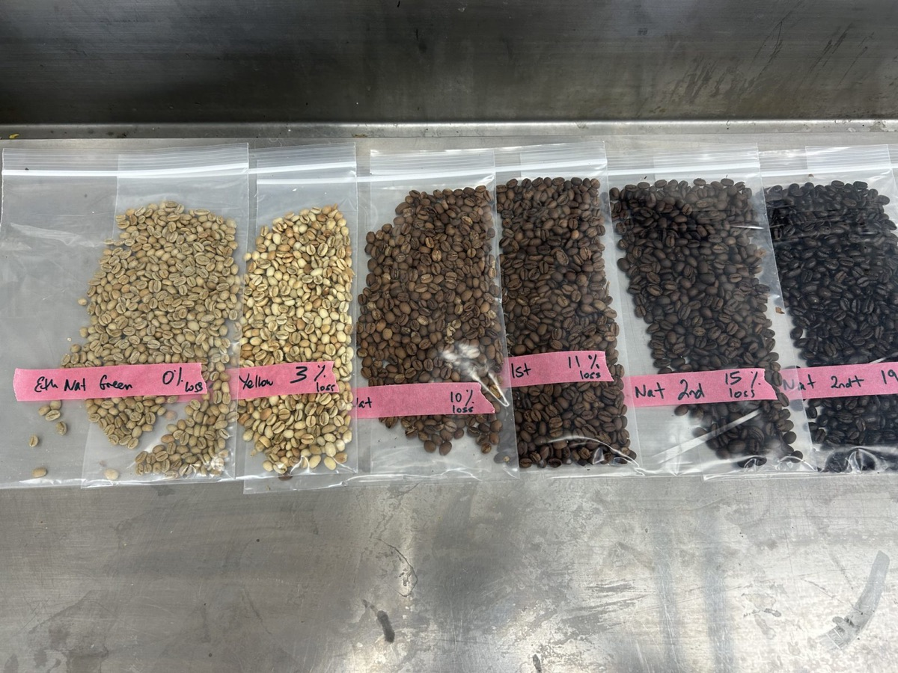
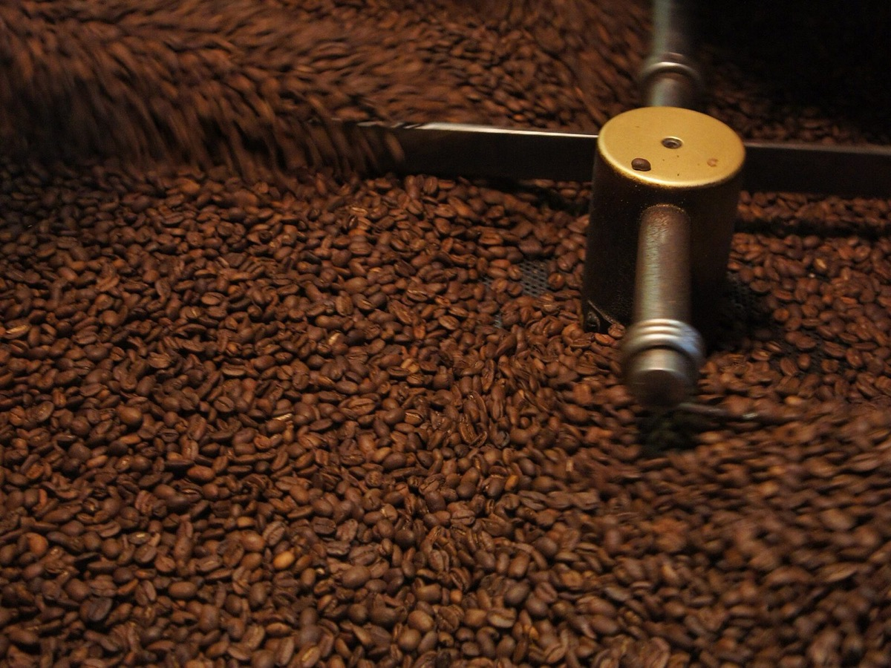
الدرجات بالتفصيل Roast levels in detail
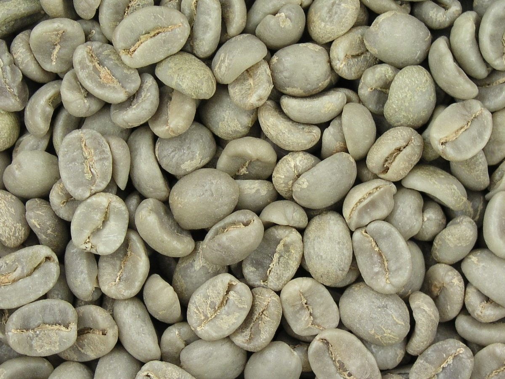
البن الأخضر Green Beans
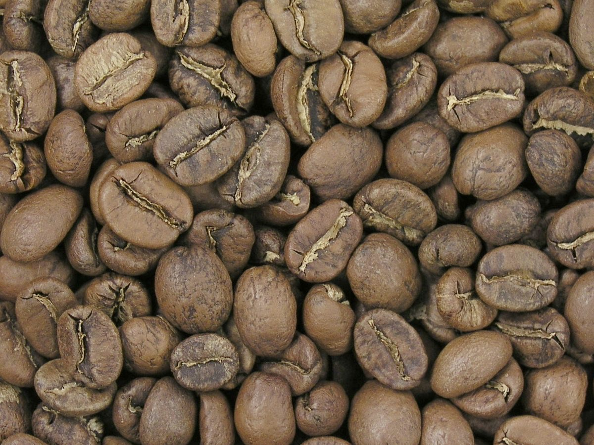
تحميص فاتح Light Roast
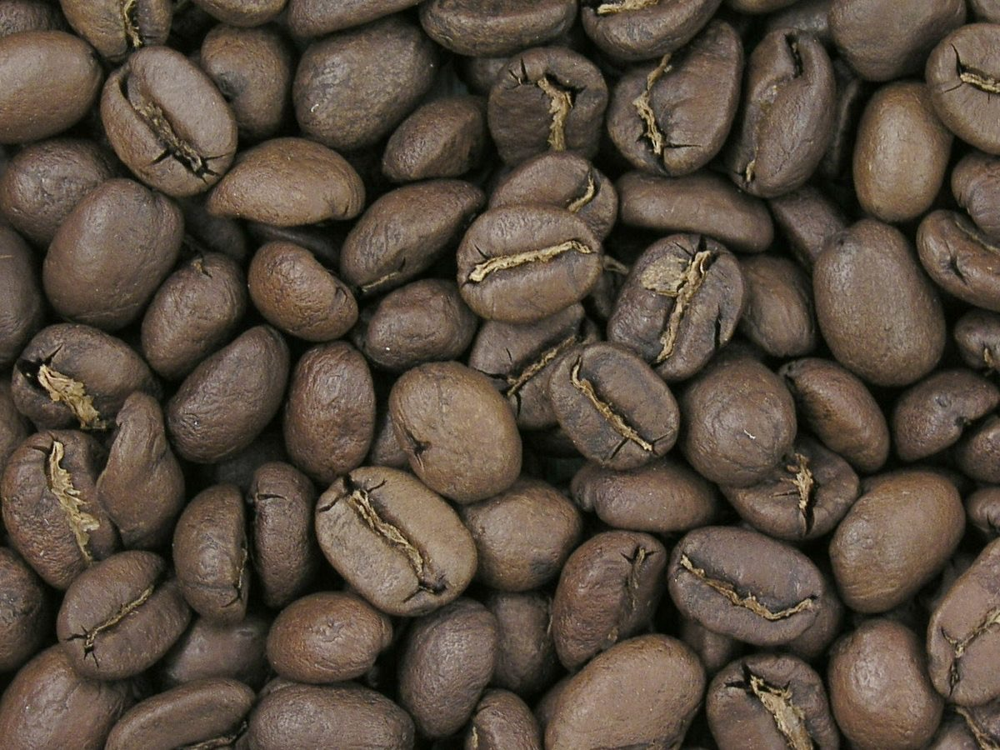
تحميص متوسط فاتح Medium-Light Roast
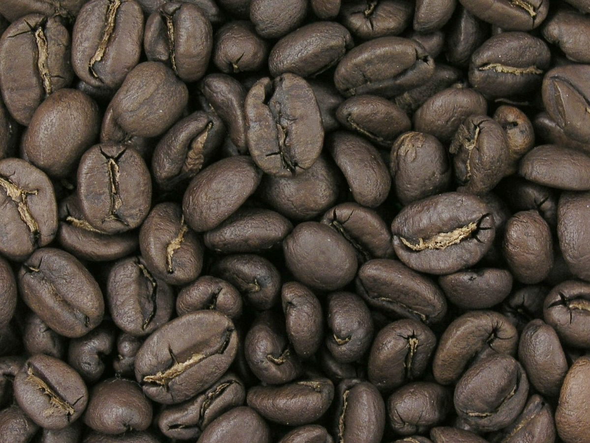
تحميص متوسط Medium Roast
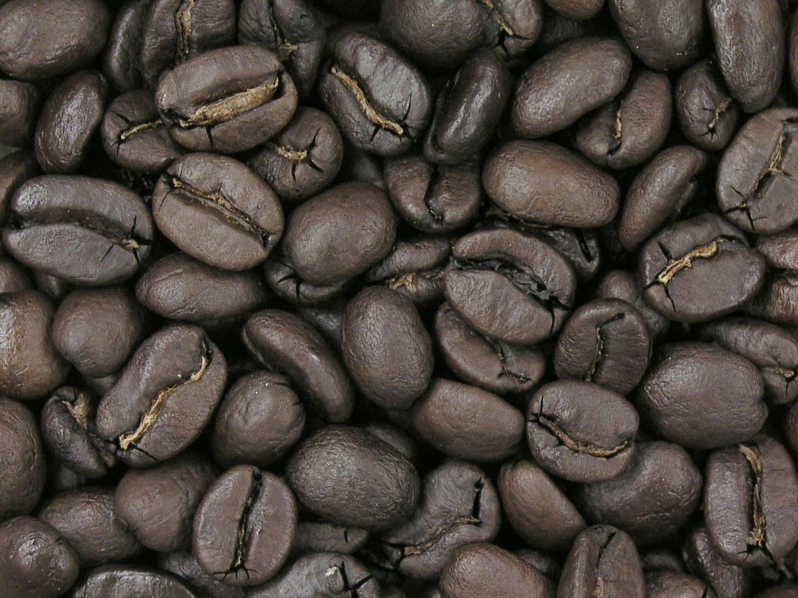
تحميص متوسط غامق Medium-Dark Roast
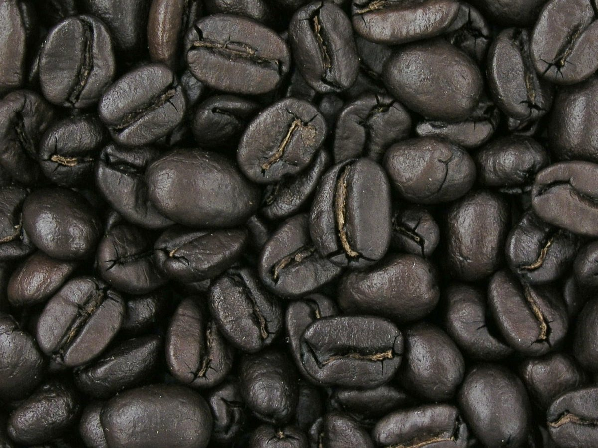
تحميص غامق Dark Roast
مصطلحات التحميص Roasting terms
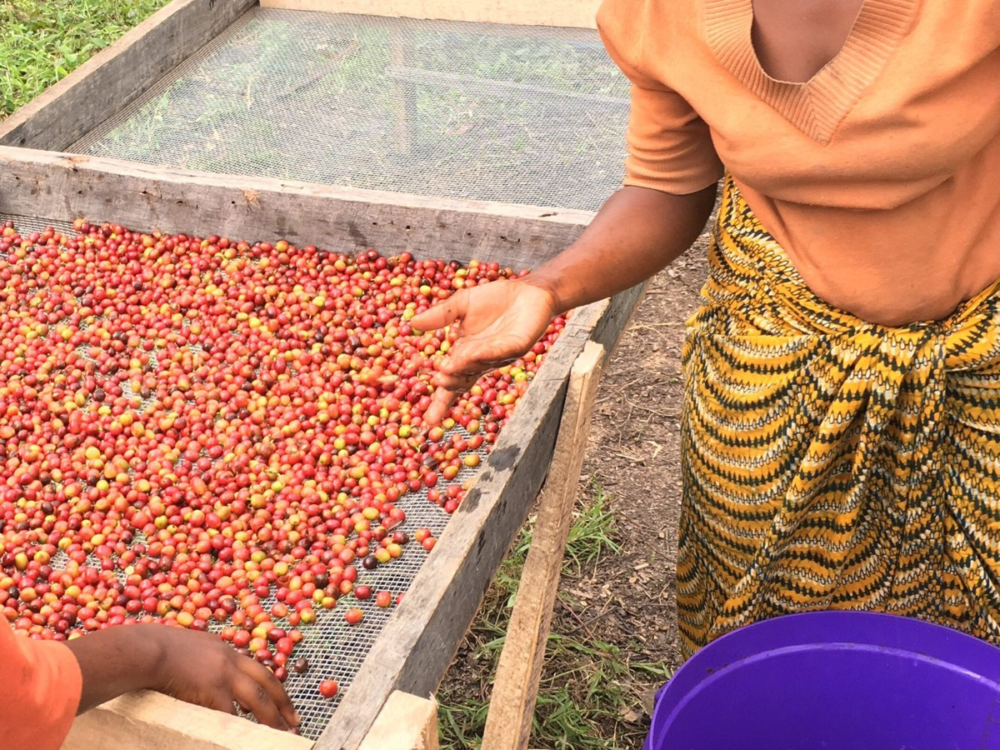
طرق معالجة البن
- الفكرة الأساسية: إيه اللي بيتشال قبل التجفيف
- Washed — المغسولة
- Natural — الطبيعية
- Honey — الهَني
- Anaerobic — اللاهوائية
- Wet Hulled — التقشير الرطب
- جدول مقارنة
الفكرة في كلمتين The big idea
افتكر طبقات الثمرة من الفصل الأول: قشرة، لب، مادة لزجة (عسل)، غلاف رَق، والبذرة. كل طرق المعالجة بتجاوب على سؤال واحد: نشيل أنهي طبقات قبل ما ننشّف البذرة؟ كل ما الثمرة تفضل لازقة في البذرة وقت التجفيف، كل ما الطعم يبقى أحلى وأكتر فاكهية — ومعاه مخاطرة أكبر.
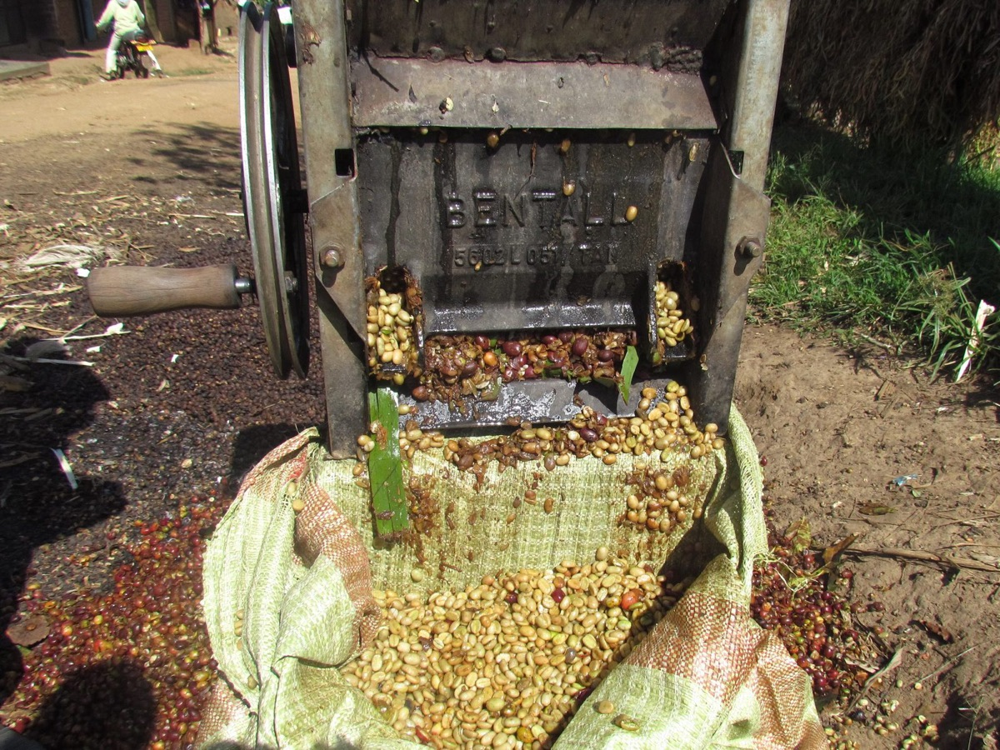
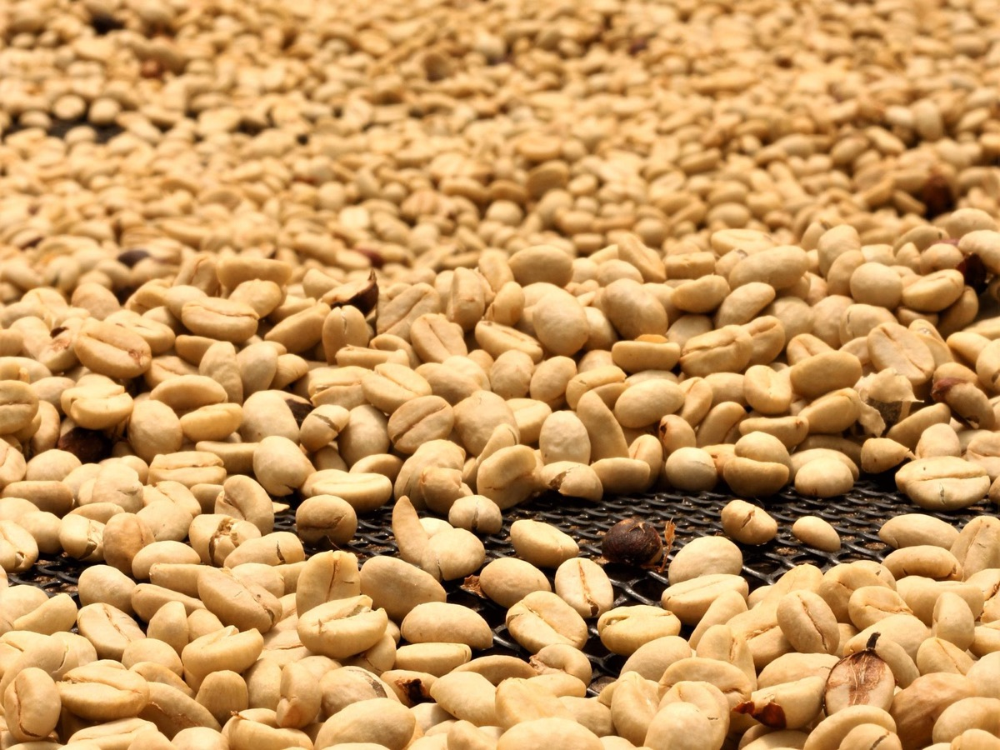
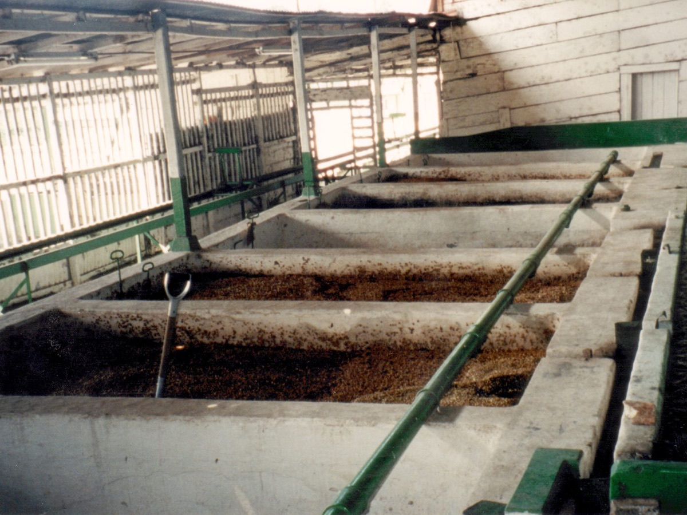
المعالجة المغسولة Washed Process
المعالجة الطبيعية (الجافة) Natural / Dry Process
معالجة الهَني (العسل) Honey Process
التخمير اللاهوائي Anaerobic Fermentation
التقشير الرطب Wet Hulled (Giling Basah)
مقارنة سريعة Quick comparison
| الطريقة | الحلاوة | الحموضة | القوام | النظافة/الوضوح | أشهر البلاد |
|---|---|---|---|---|---|
| Washed | متوسطة | عالية ولامعة | خفيف لمتوسط | عالية جداً | كولومبيا، كينيا، إثيوبيا |
| Natural | عالية جداً | متوسطة | تقيل | أقل (فاكهية بقوة) | إثيوبيا، البرازيل، اليمن |
| Honey | عالية | متوسطة ناعمة | متوسط لتقيل | متوسطة | كوستاريكا، السلفادور |
| Anaerobic | عالية | متغيّرة | متوسط لتقيل | متغيّرة (نكهات جريئة) | كولومبيا، كوستاريكا وغيرها |
| Wet Hulled | متوسطة | منخفضة | تقيل جداً | ترابي/عشبي | إندونيسيا (سومطرة) |
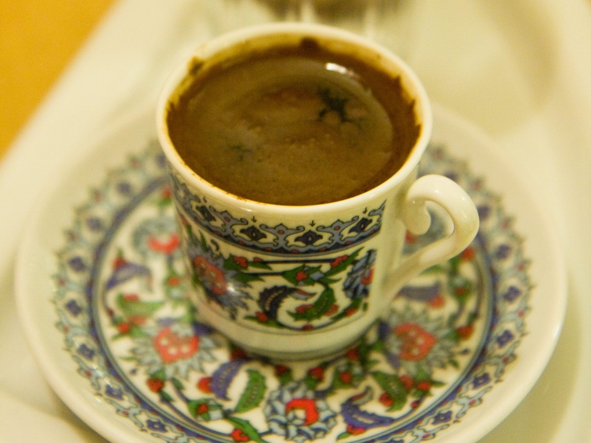
القهوة الشرقية والتقليدية
- القهوة التركي: الطحن والأدوات والتحضير
- سادة، على الريحة، مظبوط، زيادة
- التركي والإسبريسو: إيه الفرق؟
- القهوة الفرنساوي في مصر
- القهوة العربي والهيل
- القهوة اليوناني
- جدول مقارنة
القهوة التركي Turkish Coffee
القهوة التركي هي أشهر قهوة في مصر، وبتتعمل بإن البن المطحون ناعم جداً يتسخّن مع المية (والسكر لو حابب) في الكنكة لحد ما يطلع «الوش»، وبتتشرب من غير فلترة — والبن بيرسى في قاع الفنجان. سنة 2013 اليونسكو سجّلت «ثقافة وتقاليد القهوة التركية» في قائمة التراث الثقافي غير المادي.
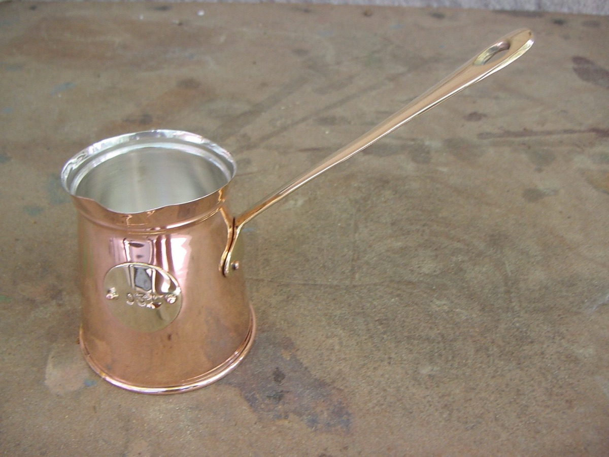
| التفاصيل | |
|---|---|
| نوع الطحن | أنعم طحنة في كل طرق التحضير — زي البودرة أو الدقيق (Extra Fine). مطاحن البن في مصر بتسميه «طحن تركي». |
| الأدوات | كنكة نحاس أو ستانلس، فنجان صغير (حوالي 60–90 مل)، معلقة صغيرة، ونار هادية. في تركيا ساعات بتتعمل على رملة سخنة. |
| الكمية الشائعة | معلقة صغيرة مليانة بن (حوالي 7–10 جم) لكل فنجان مية — وكل بيت ليه مقياسه. |
| الشكل | قهوة غامقة تقيلة، فوقها وش بني فاتح ناعم، والتفل في القاع. |
| الطعم | قوي ومركّز، قوامه تقيل ومخملي، وفيه مرارة لطيفة. لو محوَّجة هتحس بريحة الحبهان. |
طريقة التحضير خطوة بخطوة
- حط مية باردة في الكنكة بمقدار الفنجان (استخدم الفنجان نفسه كمقياس).
- ضيف البن (معلقة صغيرة مليانة تقريباً) والسكر حسب الطلب.
- قلّب كويس قبل ما تحطها على النار — بعد كده ما تقلّبش تاني عشان الوش ما يبوظش.
- حطها على نار هادية. كل ما النار تهدى، كل ما الوش يبقى أحسن والطعم أنعم.
- أول ما الوش يبدأ يعلى ويقرب من حافة الكنكة، شيلها فوراً قبل ما تفور. التركي ما بيتغليش غلي جامد.
- صبّ بهدوء في الفنجان، وابدأ بشوية من الوش عشان كل فنجان ياخد نصيبه.
- سيبها دقيقة لحد ما البن يرسى، واشربها ببطء — وسيب التفل في القاع.
درجات السكر Sugar levels
القهوة التركي والإسبريسو: إيه الفرق؟ Turkish vs Espresso
| القهوة التركي | الإسبريسو | |
|---|---|---|
| الطحن | أنعم من الإسبريسو (بودرة) | ناعم بس أخشن من التركي |
| الضغط | مفيش ضغط — تسخين في الكنكة | ضغط عالي (حوالي 9 بار) من المكنة |
| الفلترة | مفيش — التفل بيفضل في الفنجان | بيتفلتر — مفيش تفل في الكوباية |
| الوقت | حوالي 2–4 دقايق على النار | حوالي 25–30 ثانية |
| الطبقة اللي فوق | «الوش»: رغوة من البن والمية | «الكريما»: رغوة دهبية فيها زيوت وغازات |
| السكر | بيتضاف وهي بتتعمل | بيتضاف بعد التحضير لو حبيت |
| القوام | تقيل وفيه حبيبات ناعمة | تقيل وزيتي وناعم |
القهوة الفرنساوي French Coffee (Egyptian style)
المقصود بيها في مصر: «القهوة الفرنساوي» مش طريقة تحضير من فرنسا! ده اسم شائع في محلات البن والكافيهات المصرية لنوع بن متطحن ناعم ومتضاف له نكهة — أشهرها الفانيليا، وساعات البندق أو الكاكاو — وبيتعمل غالباً باللبن بدل المية.
المكونات: بن فرنساوي (بن بالنكهة) + لبن (أو لبن ومية) + سكر حسب الرغبة.
طريقة التحضير: زي التركي بالظبط: البن واللبن والسكر في الكنكة، تقليب في الأول، نار هادية، وتشيلها أول ما تبدأ تعلى — واللبن بيفور أسرع من المية فخلي بالك.
القهوة العربي Arabic Coffee (Qahwa)
القهوة العربي (أو القهوة السعودي/الخليجي) رمز للكرم والضيافة. سنة 2015 اليونسكو سجّلت «القهوة العربية، رمز الكرم» كتراث ثقافي غير مادي لعدد من دول الخليج.
الهيل والتوابل: الهيل (الحبهان) هو نجم القهوة العربي، وساعات بيتضاف زعفران أو قرنفل أو زنجبيل حسب المنطقة.
البن المستخدم: في الخليج غالباً أرابيكا محمَّصة فاتح جداً، فلون القهوة بيطلع أصفر دهبي مش أسود. وفي الشام بيتحمص غامق وبتتعمل «قهوة سادة» مُرّة.
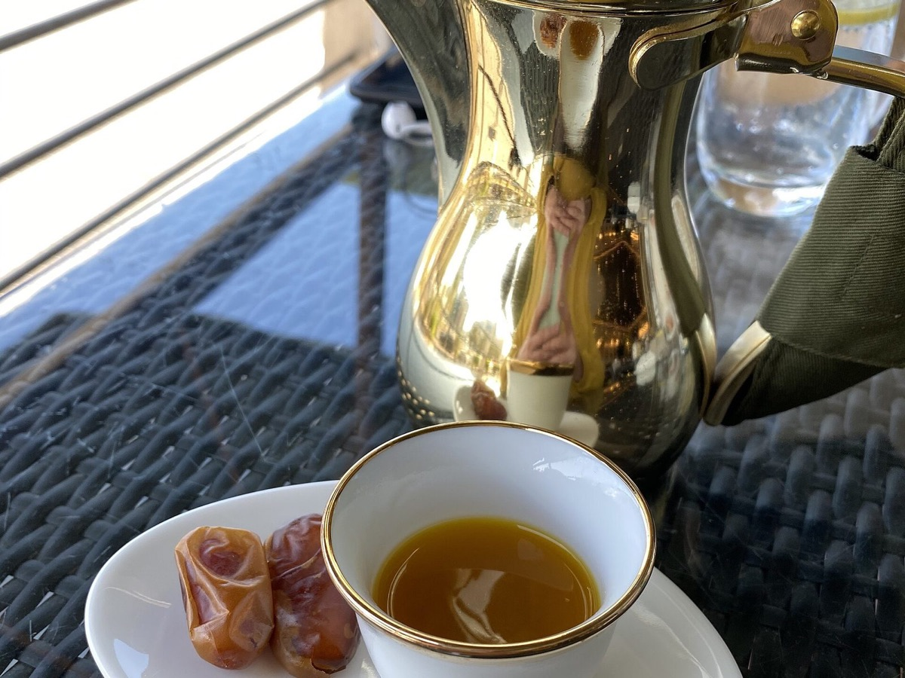
طريقة تحضير القهوة العربي
- غلّي المية في الدلّة أو الإبريق.
- ضيف البن المطحون (طحن متوسط لناعم) وسيبه يغلي على نار هادية حوالي 10–15 دقيقة.
- شيلها من على النار، وضيف الهيل المطحون (والزعفران أو القرنفل لو بتحب)، ورجّعها غلوة خفيفة.
- سيبها دقايق لحد ما البن يرسى، وصبّ القهوة الصافية في دلّة التقديم (ممكن تتصفّى بليفة صغيرة في البُز).
- تتقدّم في فناجين صغيرة، كمية قليلة في كل مرة، ومن غير سكر — والحلاوة بتيجي من التمر.
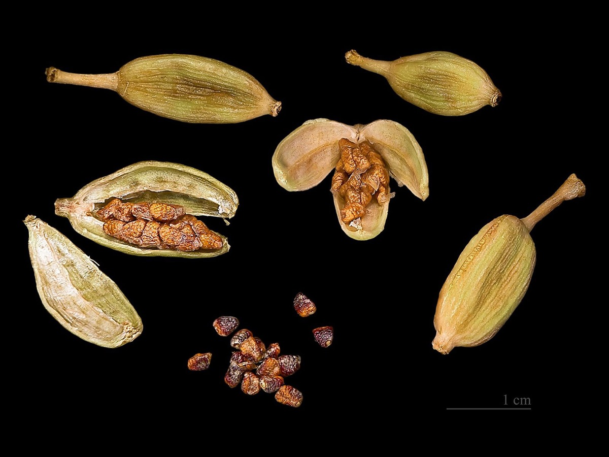
القهوة اليوناني Greek Coffee
القهوة اليوناني هي تقريباً نفس القهوة التركي في الطريقة: بن ناعم جداً بيتسخّن مع المية والسكر في كنكة صغيرة اسمها Briki، وبتتقدّم من غير فلترة مع كوباية مية. الرغوة اللي فوقها اسمها Kaimaki واليونانيين بيعتبروها علامة القهوة المظبوطة.
الطريف إن درجات السكر عندهم شبه مصر بالظبط: Sketos (سادة)، Metrios (مظبوط)، Glykos (زيادة).
الفرق عن التركي غالباً في البن نفسه (اليونانيين بيميلوا لتحميص أفتح شوية) وفي الاسم والثقافة أكتر من الطريقة.
مقارنة القهوة الشرقية
| تركي | فرنساوي (مصري) | عربي | يوناني | |
|---|---|---|---|---|
| البن | ناعم جداً، تحميص فاتح لغامق | ناعم جداً + نكهة (فانيليا/بندق) | متوسط لناعم، تحميص فاتح غالباً (خليجي) | ناعم جداً، تحميص فاتح لمتوسط |
| السائل | مية | لبن أو لبن ومية | مية | مية |
| الإضافات | سكر، حبهان (محوّج) | سكر | هيل، زعفران، قرنفل | سكر |
| الأداة | كنكة | كنكة | دلّة | Briki |
| اللون | غامق جداً | بني فاتح باللبن | أصفر دهبي لبني | غامق |
| التقديم | فنجان + مية | فنجان أو مج | فناجين صغيرة + تمر | فنجان + مية |
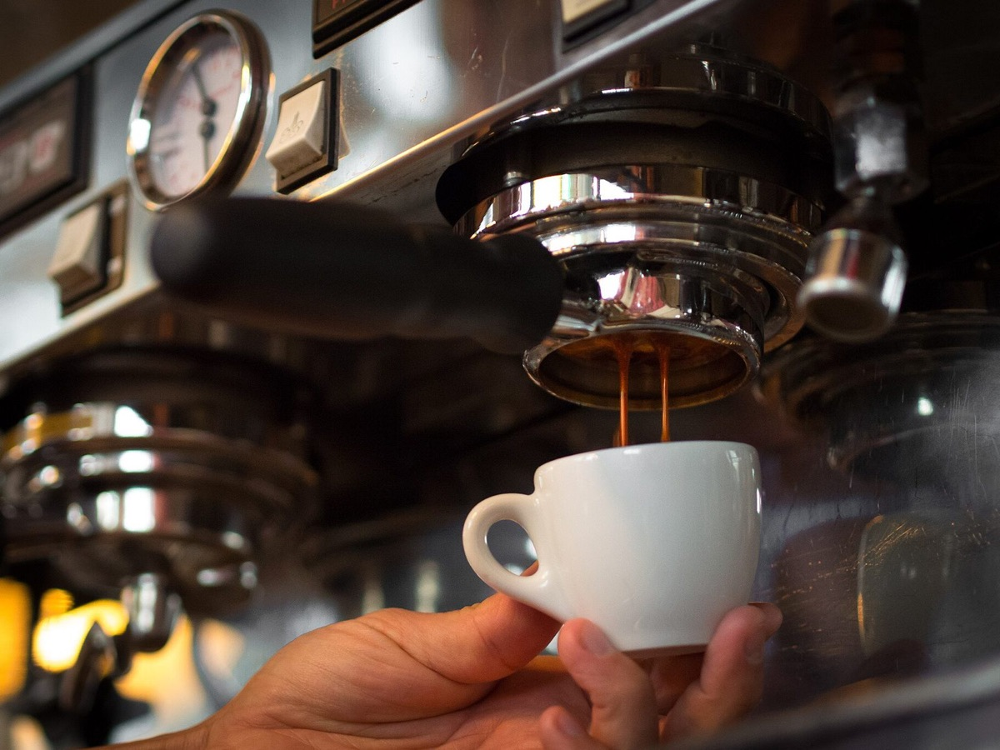
عائلة الإسبريسو
- الإسبريسو وأحجامه
- ريستريتو ولونجو
- أمريكانو ولونج بلاك
- ماكياتو، كورتادو، فلات وايت
- كابتشينو ولاتيه وموكا
- بريفي، سبانش لاتيه، كاراميل ماكياتو، أفوجاتو
- مقارنات بصرية وأحجام
قبل ما نبدأ: إزاي تقرا صفحة المشروب
كل مشروب ليه صفحة بنفس الترتيب: الاسم بالعربي والإنجليزي، صورة حقيقية، ورسم مقطعي بيوضح الطبقات (إسبريسو، لبن، رغوة...)، وبعدين المكونات وطريقة التحضير والنسبة والحجم والطعم، وفي الآخر الفرق بينه وبين أقرب مشروب ليه.
يعني إيه «شوت»؟
«الشوت» هو مرة استخلاص واحدة من مكنة الإسبريسو. البن المطحون بيتحط في سلة معدن (في البورتافلتر)، ويتكبس، والمكنة بتزق مية سخنة بضغط عالي من خلاله. الباريستا بيتحكم في 3 حاجات أساسية: كمية البن (Dose)، وكمية القهوة الطالعة (Yield)، والوقت. لو غيّرنا كمية القهوة الطالعة بس، بنتنقّل بين ريستريتو وإسبريسو ولونجو:
إسبريسو
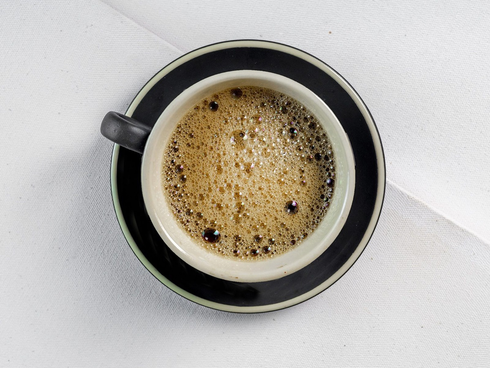
ما هو؟ قهوة مركّزة بتتعمل بإن مية سخنة (حوالي 90–96°C) تتزق بضغط عالي (حوالي 9 بار) خلال بن مطحون ناعم ومكبوس، في حوالي 25–30 ثانية. النتيجة كمية صغيرة جداً ومركّزة، وفوقها طبقة رغوة دهبية اسمها «الكريما» (Crema). الإسبريسو هو الأساس اللي بيتبني عليه كل مشروبات الفصل ده.
- بن مطحون ناعم (شائع: حوالي 7–10 جم للسنجل، و14–20 جم للدبل)
- مية مفلترة
- اطحن البن ناعم قبل التحضير مباشرة.
- حط البن في البورتافلتر، وزّعه، واكبسه بالتامبر بشكل مستوي.
- ركّب البورتافلتر في المكنة وشغّل.
- وقّف لما توصل للكمية المطلوبة (غالباً بعد 25–30 ثانية).
- قدّمه فوراً قبل ما الكريما تختفي.
إسبريسو سنجل
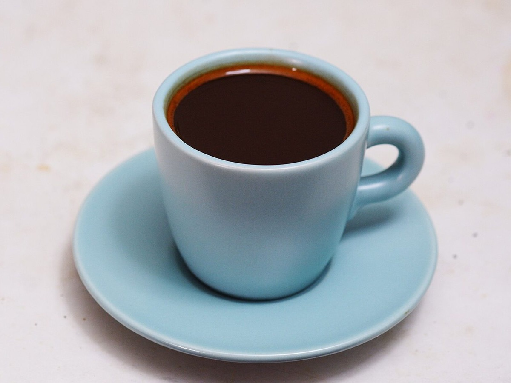
ما هو؟ «شوت» واحد من الإسبريسو. ده الحجم الكلاسيكي للإسبريسو في إيطاليا، وبيتعمل بكمية بن أقل وبيطلع منه كمية قهوة أقل.
- بن مطحون ناعم (شائع: حوالي 7–10 جم)
- مية
- استخدم سلة البورتافلتر الصغيرة (Single basket).
- وزّع البن واكبسه.
- استخلص حوالي 25–30 مل في حوالي 25–30 ثانية.
- قدّمه في فنجان صغير.
دبل إسبريسو
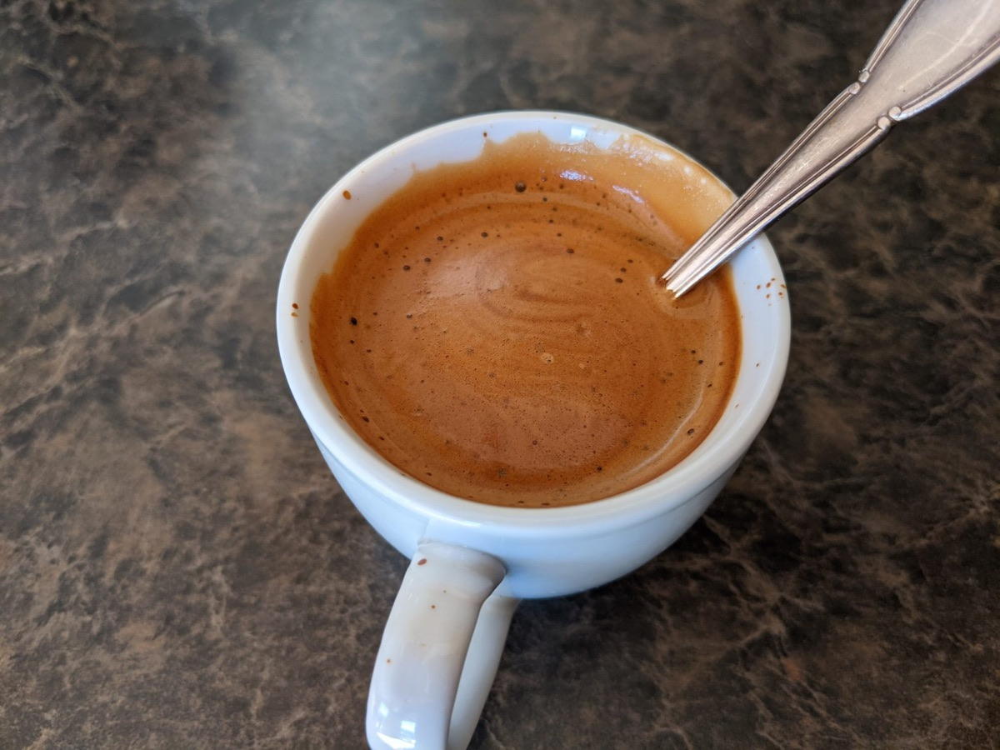
ما هو؟ شوتين إسبريسو في فنجان واحد، بيتعملوا مرة واحدة من بورتافلتر فيه سلة أكبر. ده الأساس لمعظم مشروبات اللبن في الكافيهات الحديثة.
- بن مطحون ناعم (شائع: حوالي 14–20 جم)
- مية
- استخدم السلة الكبيرة (Double basket).
- وزّع البن واكبسه.
- استخلص حوالي 36–60 مل (حسب الوصفة) في حوالي 25–32 ثانية.
- ممكن ينزل من بزّين في فنجان واحد، أو يتقسم على فنجانين كسنجل.
دوبيو
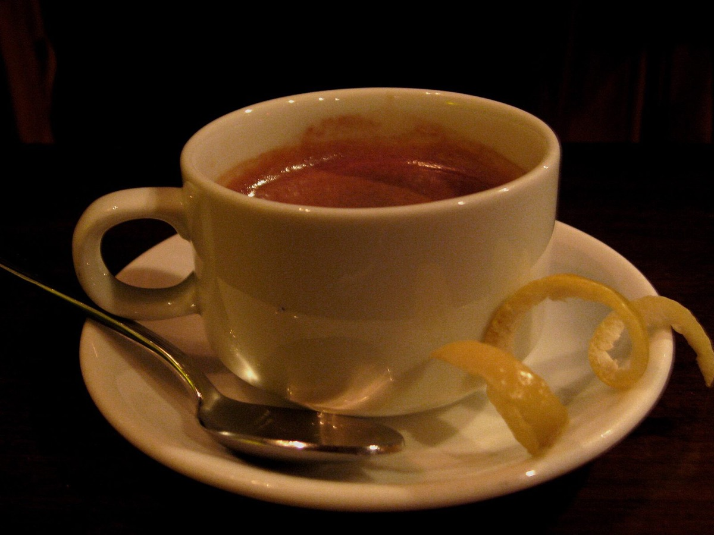
ما هو؟ Doppio كلمة إيطالية معناها «مزدوج»، وهو نفسه الدبل إسبريسو بالظبط. بعض الكافيهات بتكتبه بالإيطالي في المنيو، وبعضها بيقدّمه في كوباية إزاز صغيرة بدل الفنجان.
- بن مطحون ناعم (شائع: حوالي 14–20 جم)
- مية
- زي الدبل إسبريسو بالظبط: سلة كبيرة، توزيع، كبس.
- استخلاص حوالي 36–60 مل.
- يتقدّم في فنجان أو كوباية إزاز صغيرة.
ريستريتو
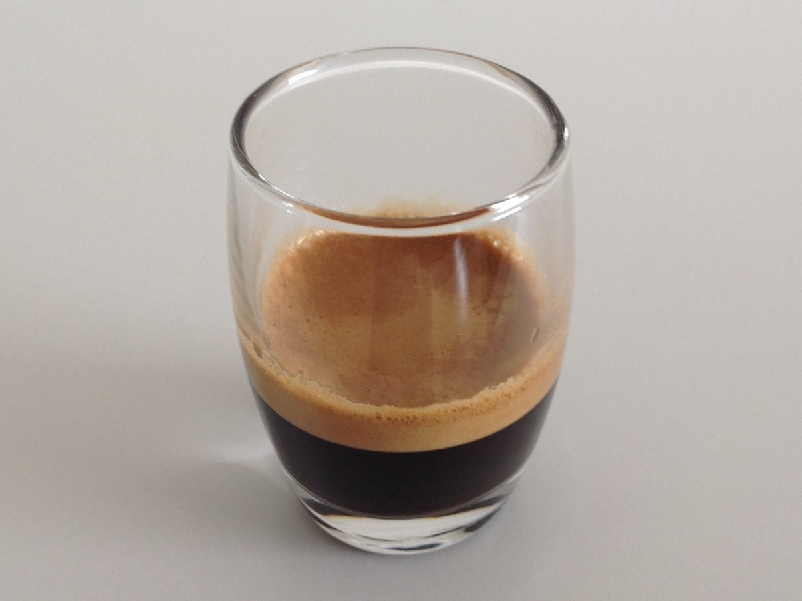
ما هو؟ Ristretto بالإيطالي يعني «مقيّد» أو «مختصر». هو إسبريسو بنفس كمية البن، بس بنوقّفه بدري فيطلع كمية قهوة أقل — يعني أقصر وأتقل.
- بن مطحون ناعم (نفس كمية الإسبريسو أو طحن أنعم شوية)
- مية أقل
- حضّر البورتافلتر زي الإسبريسو.
- وقّف الاستخلاص بدري (أو اطحن أنعم) عشان تطلع كمية أقل.
- الوقت غالباً حوالي 15–25 ثانية.
- قدّمه فوراً.
لونجو
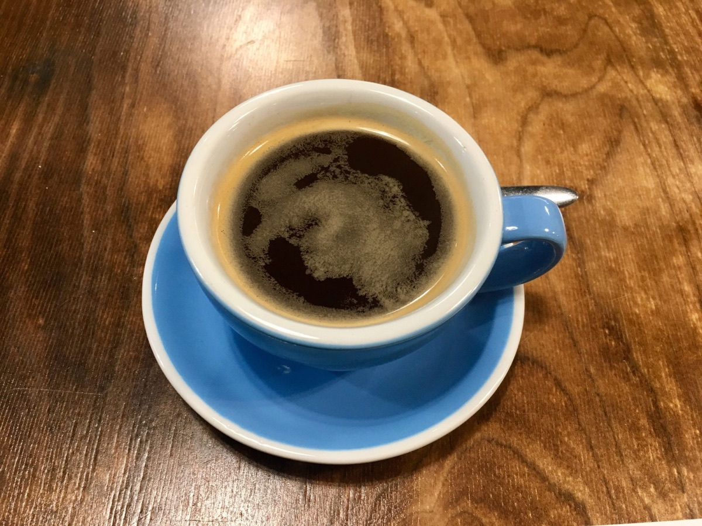
ما هو؟ Lungo يعني «طويل» بالإيطالي. هو إسبريسو بنسيب المكنة تعدّي فيه مية أكتر من خلال نفس البن، فبيطلع كمية أكبر وطعم أخف وأمرّ.
- بن مطحون ناعم (ممكن أخشن شوية)
- مية أكتر
- حضّر البورتافلتر زي الإسبريسو.
- سيب الاستخلاص يكمّل وقت أطول (غالباً 40 ثانية أو أكتر).
- وقّف عند الكمية المطلوبة.
- قدّمه في فنجان أكبر.
أمريكانو
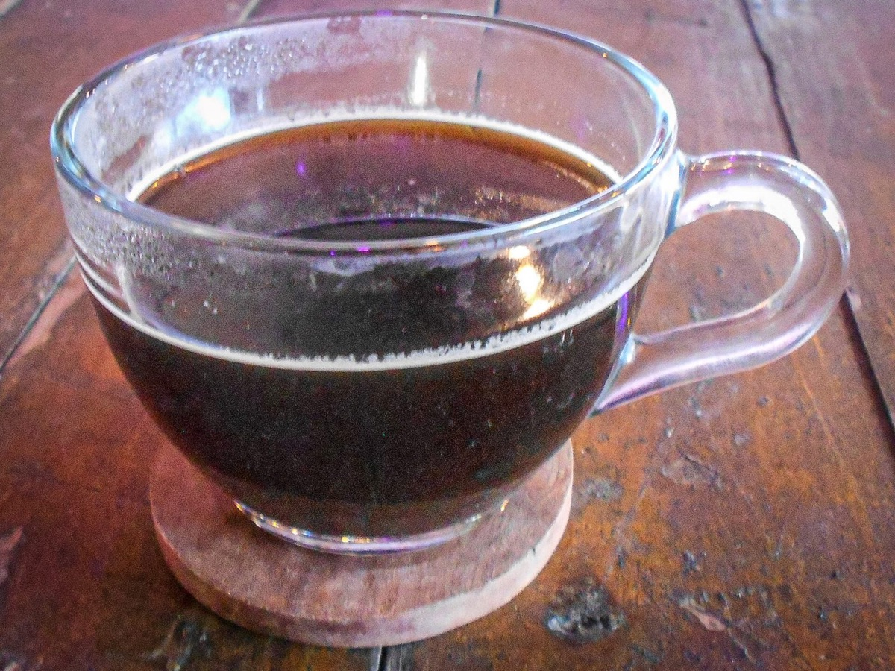
ما هو؟ إسبريسو (غالباً دبل) متخفف بمية سخنة، فبيطلع قهوة سودة حجمها قريب من القهوة الفلتر، بس بطعم الإسبريسو. فيه حكاية شائعة إن الجنود الأمريكان في إيطاليا في الحرب العالمية التانية كانوا بيخففوا الإسبريسو بالمية — ومن هنا الاسم.
- 1–2 شوت إسبريسو
- مية سخنة
- حضّر الإسبريسو في الكوباية.
- ضيف المية السخنة عليه (أو حسب طريقة الكافيه).
- قلّب وقدّم. ممكن تضيف لبن أو سكر حسب رغبتك.
لونج بلاك
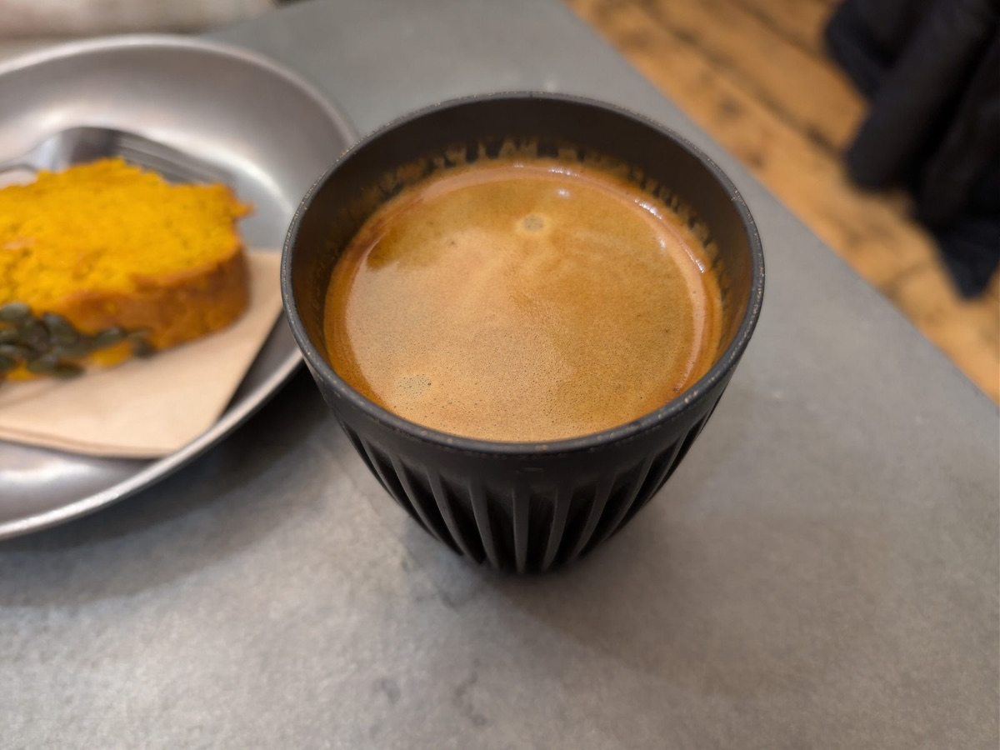
ما هو؟ مشروب أسترالي/نيوزيلندي: مية سخنة في الكوباية الأول، وبعدين دبل إسبريسو (أو ريستريتو) بيتصب فوقها. كده الكريما بتفضل على الوش، والطعم بيبقى أقوى من الأمريكانو.
- دبل إسبريسو أو دبل ريستريتو
- مية سخنة (أقل من الأمريكانو غالباً)
- حط المية السخنة في الكوباية الأول.
- اعمل الإسبريسو مباشرة فوق المية.
- قدّمه من غير تقليب عشان الكريما تفضل فوق.
ماكياتو
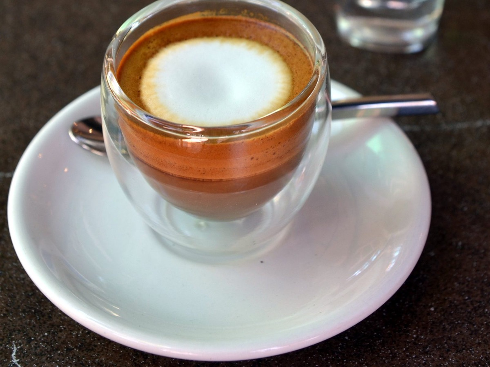
ما هو؟ Macchiato بالإيطالي يعني «مُبقّع» أو «معلَّم». هو إسبريسو عليه «بقعة» صغيرة من رغوة اللبن — يعني لسه إسبريسو في الأساس، بس أنعم شوية.
- إسبريسو (سنجل أو دبل)
- معلقة أو اتنين رغوة لبن
- حضّر الإسبريسو في فنجان صغير.
- بخّر شوية لبن لحد ما تعمل رغوة.
- حط معلقة أو اتنين من الرغوة على الإسبريسو.
كابتشينو
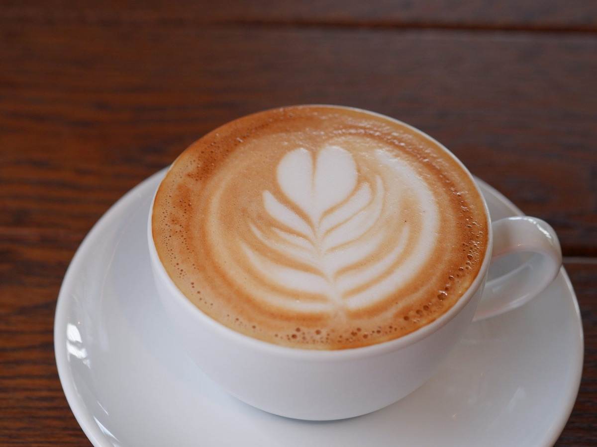
ما هو؟ إسبريسو + لبن مبخَّر + طبقة رغوة عالية. التعريف الكلاسيكي بيقول تقريباً تلت إسبريسو وتلت لبن وتلت رغوة — لكن عملياً النسبة بتختلف كتير. الاسم بييجي من لون رداء رهبان الكبوشيين (Capuchin).
- إسبريسو (سنجل أو دبل)
- لبن مبخَّر
- رغوة لبن كثيفة
- (اختياري) رشّة كاكاو أو قرفة
- حضّر الإسبريسو في كوباية الكابتشينو.
- بخّر اللبن وادخّل هوا أكتر عشان تعمل رغوة عالية.
- صبّ اللبن والرغوة على الإسبريسو.
- ممكن ترسم Latte Art أو ترش كاكاو.
لاتيه
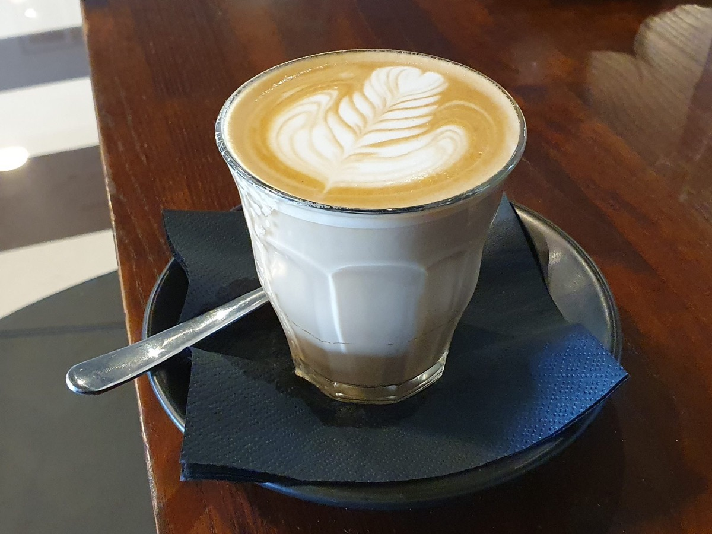
ما هو؟ Caffè Latte يعني «قهوة باللبن» بالإيطالي. إسبريسو + كمية كبيرة من اللبن المبخَّر + طبقة رغوة خفيفة. ده من أشهر مشروبات الكافيهات في العالم، وغالباً أول اختيار للي بيحب القهوة الهادية.
- إسبريسو (سنجل أو دبل)
- لبن مبخَّر (كمية كبيرة)
- طبقة رغوة ناعمة خفيفة
- حضّر الإسبريسو في كوباية كبيرة.
- بخّر اللبن مع هوا قليل عشان الرغوة تبقى ناعمة وخفيفة.
- صبّ اللبن على الإسبريسو، وارسم Latte Art لو بتعرف.
فلات وايت
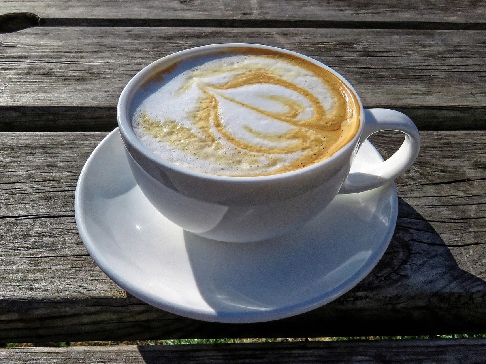
ما هو؟ مشروب ظهر في أستراليا ونيوزيلندا في الثمانينات (والبلدين بيتخانقوا مين اخترعه). دبل إسبريسو أو ريستريتو + لبن مبخَّر بطبقة رغوة رقيقة جداً ولامعة (Microfoam) — يعني الوش «فلات» مسطّح.
- دبل إسبريسو أو دبل ريستريتو
- لبن مبخَّر برغوة ناعمة جداً
- حضّر دبل إسبريسو أو ريستريتو.
- بخّر اللبن مع هوا قليل جداً عشان يطلع لامع وناعم.
- صبّ بسرعة متوسطة عشان الرغوة الرقيقة تمتزج مع القهوة.
- غالباً بيتقدم بـ Latte Art بسيط.
كورتادو
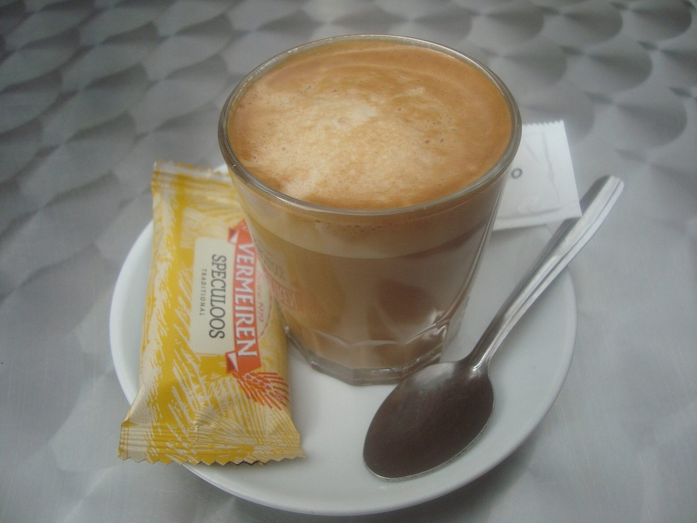
ما هو؟ مشروب إسباني. Cortado من كلمة Cortar يعني «يقطع» — اللبن «بيقطع» حدّة الإسبريسو. إسبريسو + كمية لبن مبخَّر قريبة من كميته، برغوة قليلة جداً، وغالباً في كوباية إزاز صغيرة.
- إسبريسو (سنجل أو دبل)
- لبن مبخَّر برغوة قليلة
- حضّر الإسبريسو في كوباية صغيرة.
- بخّر اللبن من غير رغوة تقريباً.
- ضيف كمية لبن قريبة من كمية الإسبريسو.
موكا
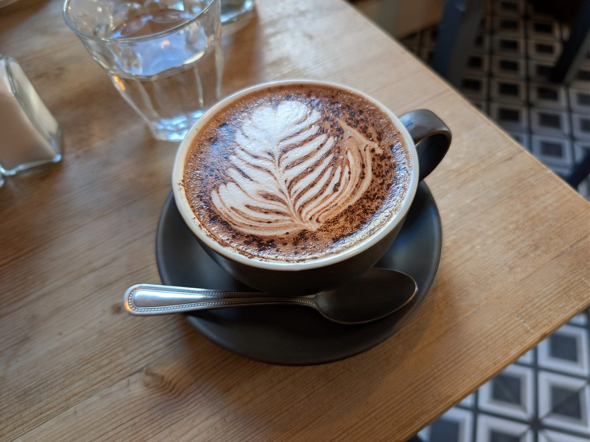
ما هو؟ لاتيه بالشوكولاتة: إسبريسو + صوص أو بودرة شوكولاتة + لبن مبخَّر، وغالباً بيتحط فوقه كريمة مخفوقة. الاسم مأخوذ من ميناء المخا (Mocha) في اليمن اللي كان أشهر ميناء لتصدير البن زمان.
- إسبريسو
- صوص أو بودرة شوكولاتة
- لبن مبخَّر
- (اختياري) كريمة مخفوقة ورشة كاكاو
- حط الشوكولاتة في الكوباية.
- اعمل الإسبريسو عليها وقلّب كويس لحد ما تدوب.
- ضيف اللبن المبخَّر.
- زيّن بالكريمة المخفوقة أو صوص الشوكولاتة.
كافيه بريفي
ما هو؟ نسخة أمريكية من اللاتيه، بس بدل اللبن العادي بيتبخّر «Half-and-Half» — وده خليط نص لبن ونص كريمة (دهونه حوالي 10–18%). النتيجة مشروب أغنى وأتقل بكتير.
- إسبريسو
- هاف آند هاف (لبن + كريمة) مبخَّر
- حضّر الإسبريسو.
- بخّر الهاف آند هاف — بيعمل رغوة كبيرة وناعمة بسرعة.
- صبّه على الإسبريسو.
سبانش لاتيه
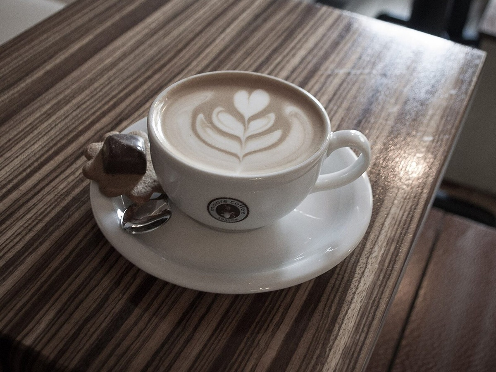
ما هو؟ لاتيه محلّى باللبن المكثف المحلّى (Condensed Milk) — اتشهر جداً في الخليج ومصر. فكرته قريبة من مشروبات إسبانية زي Café con leche وCafé Bombón (إسبريسو مع لبن مكثف)، لكن «سبانش لاتيه» بالشكل ده اسم شائع في كافيهات الشرق الأوسط أكتر من إسبانيا نفسها.
- إسبريسو
- لبن مكثف محلّى
- لبن مبخَّر (أو بارد في النسخة الآيس)
- حط اللبن المكثف في قاع الكوباية.
- ضيف الإسبريسو وقلّب.
- ضيف اللبن المبخَّر واعمل رغوة خفيفة.
كاراميل ماكياتو
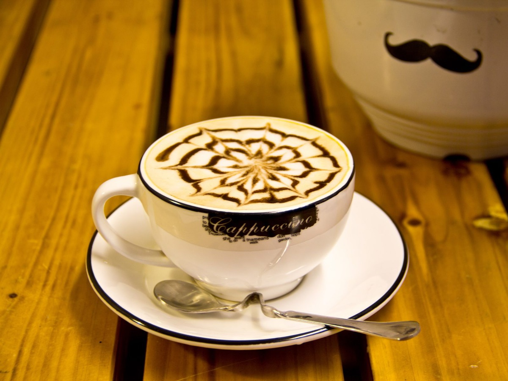
ما هو؟ مشروب اتشهر في سلاسل الكافيهات الأمريكية (زي ستاربكس في التسعينات): سيروب فانيليا + لبن مبخَّر + إسبريسو بيتصب «فوق» اللبن (ده سبب كلمة ماكياتو) + صوص كراميل مرسوم على الوش.
- سيروب فانيليا
- لبن مبخَّر ورغوة
- إسبريسو
- صوص كراميل
- حط سيروب الفانيليا في الكوباية.
- ضيف اللبن المبخَّر والرغوة.
- صب الإسبريسو ببطء فوق الرغوة فيعمل «علامة».
- ارسم صوص الكراميل على الوش (شبكة أو دوائر).
أفوجاتو
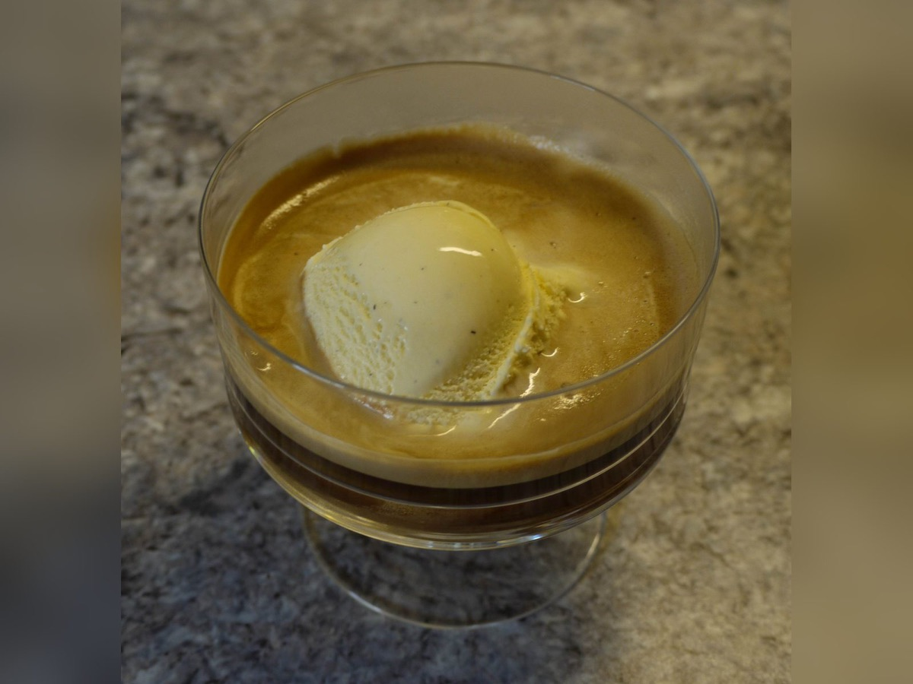
ما هو؟ Affogato يعني «غرقان» بالإيطالي: بولة آيس كريم فانيليا (أو جيلاتو) «بتغرق» في شوت إسبريسو سخن. نص مشروب ونص حلو.
- بولة آيس كريم فانيليا أو جيلاتو
- سنجل أو دبل إسبريسو
- حط بولة الآيس كريم في كوباية أو بولة صغيرة.
- اعمل الإسبريسو.
- صبّه سخن على الآيس كريم قدام الزبون — وكُل بسرعة!
مقارنات بصرية Side-by-side
الرسومات دي متقاسة بنفس المقياس، فتقدر تشوف الفرق في الحجم والطبقات بعينك. النسب تقريبية — كل كافيه ليه وصفته.
لاتيه ضد كابتشينو
كابتشينو ضد فلات وايت
ماكياتو ضد كورتادو
إسبريسو ضد ريستريتو ضد لونجو
أمريكانو ضد لونج بلاك
موكا ضد سبانش لاتيه
أحجام المشروبات جنب بعض Size lineup
| المشروب | الحجم الشائع | إسبريسو | لبن | رغوة |
|---|---|---|---|---|
| Espresso | 25–40 مل | كله | — | — |
| Macchiato | 40–90 مل | تقريباً كله | — | معلقة أو اتنين |
| Cortado | 90–130 مل | ≈ النص | ≈ النص | قليلة جداً |
| Flat White | 150–180 مل | ≈ تلت لربع | كتير | رقيقة جداً (≈ نص سم) |
| Cappuccino | 150–180 مل (وأكبر في كافيهات كتير) | ≈ تلت لربع | متوسط | سميكة (≈ 1–2 سم+) |
| Latte | 240–350 مل | ≈ سدس لتُمن | كتير جداً | خفيفة (≈ 1 سم) |
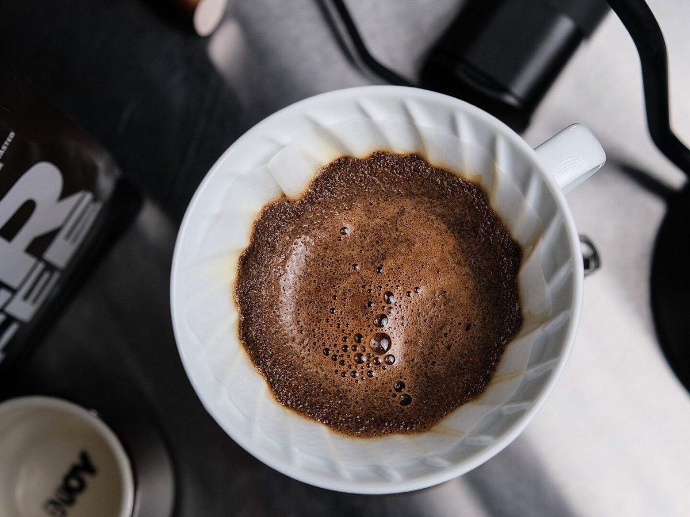
طرق تحضير القهوة
- الطحن المناسب لكل طريقة
- V60 و Chemex
- French Press و Moka Pot
- مكنة الفلتر و AeroPress
- Siphon و Cold Drip
- جدول مقارنة شامل
الطحن: أهم سر Grind size
قاعدة بسيطة: كل ما المية تقعد مع البن وقت أطول، كل ما الطحن يبقى أخشن. الإسبريسو بياخد 30 ثانية فطحنه ناعم، والفرنش بريس بياخد 4 دقايق فطحنه خشن، والكولد برو بياخد ساعات فطحنه خشن جداً. لو الطحن أنعم من اللازم القهوة هتطلع مُرّة وقابضة، ولو أخشن من اللازم هتطلع مايّة وحامضة.
قمع V60
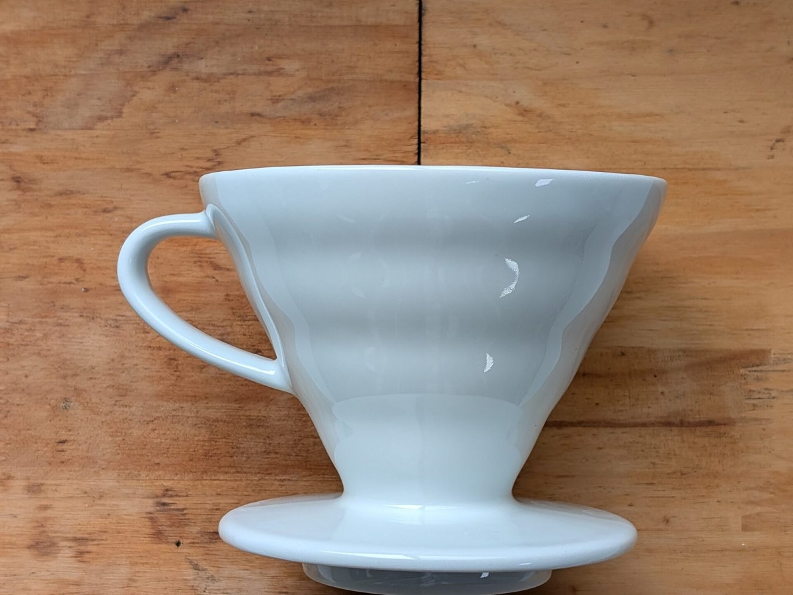
الـ V60 قمع على شكل مخروط بزاوية 60 درجة (ومن هنا اسمه) من شركة Hario اليابانية. من جوه فيه خطوط حلزونية وفي قاعه فتحة واحدة كبيرة، فسرعة نزول المية بتعتمد عليك وعلى طريقة صبّك. ده من أشهر أدوات «الصبّ اليدوي» (Pour-Over) في القهوة المختصة.
طريقة الاستخدام خطوة بخطوة
- حط فلتر الورق واغسله بمية سخنة (وارمي المية دي) عشان يروح طعم الورق ويسخن القمع.
- حط البن (مثلاً 15 جم) وهز القمع خفيف عشان يتسطّح.
- «التزهير» (Bloom): صب مية حوالي ضعف وزن البن، واستنى 30–45 ثانية — هتلاقي البن بينفش ويطلع غازات.
- كمّل الصب على مراحل في دواير هادية من النص للأطراف لحد الوزن النهائي (مثلاً 250 جم مية).
- سيب المية تنزل كلها، والمفروض تخلص على حوالي 3 دقايق. لو خلصت أسرع بكتير اطحن أنعم، ولو أبطأ اطحن أخشن.
النتيجة: قهوة نضيفة وواضحة جداً، قوامها خفيف لمتوسط، والنكهات (فواكه، زهور...) باينة بشكل ممتاز.
المميزات
- بيبيّن نكهات البن بوضوح
- رخيص ومتوفر
- تحكم كامل في كل خطوة
العيوب
- محتاج تكنيك وممارسة
- يفضّل معاه غلاية بزّ رفيع وميزان
- أي غلطة في الصب بتبان في الطعم
كيمكس
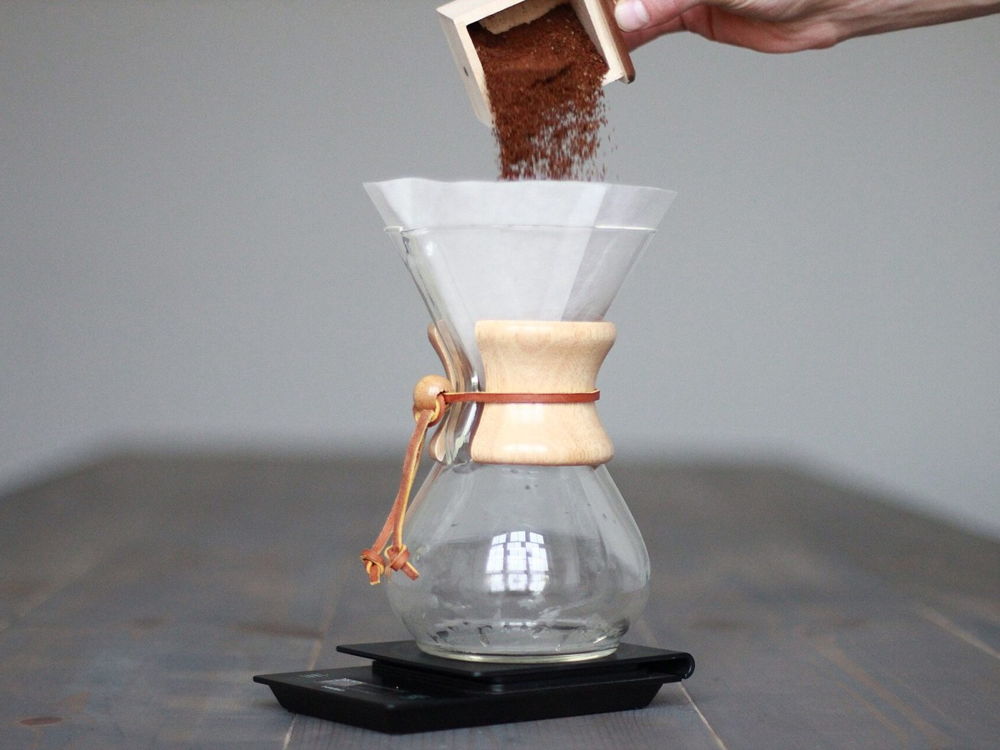
الكيمكس اخترعه كيميائي ألماني اسمه Peter Schlumbohm سنة 1941: قطعة إزاز واحدة على شكل ساعة رملية، وفي النص طوق خشب وجلد. سرّه في فلاتر الورق السميكة الخاصة بيه (أتقل من الفلاتر العادية بحوالي 20–30%) اللي بتحجز الزيوت والجزيئات الناعمة.
طريقة الاستخدام خطوة بخطوة
- افتح الفلتر بحيث الجنب اللي فيه 3 طبقات يبقى ناحية البزّ، واغسله بمية سخنة وارميها.
- حط البن (مثلاً 30 جم لـ 500 جم مية).
- Bloom بحوالي ضعف وزن البن واستنى 45 ثانية.
- كمّل الصب على مراحل لحد الوزن النهائي.
- بعد ما المية تنزل، شيل الفلتر وقلّب القهوة وقدّمها.
النتيجة: أنضف قهوة ممكن تشربها تقريباً: قوام خفيف شبه الشاي، وحلاوة ووضوح عاليين.
المميزات
- نضافة ووضوح عالي جداً
- شكله جميل ويعمل كذا كوباية مرة واحدة
- الإزاز ما بيحتفظش بريحة
العيوب
- فلاتره غالية ومش سهل تلاقيها في كل مكان
- قوام خفيف — مش لكل الناس
- إزاز ممكن يتكسر
فرنش بريس
الفرنش بريس طريقة «نقع» (Immersion): البن الخشن بيقعد في المية السخنة كام دقيقة، وبعدين بنكبس فلتر معدن شبكي لتحت عشان يفصل البن عن القهوة. من أسهل الطرق وأكثرها ثباتاً.
طريقة الاستخدام خطوة بخطوة
- حط البن الخشن في الإبريق (مثلاً 30 جم لـ 500 جم مية).
- صب المية السخنة كلها مرة واحدة وقلّب خفيف.
- حط الغطا (من غير ما تكبس) واستنى حوالي 4 دقايق.
- اختياري: قلّب الطبقة اللي فوق وشيل الرغوة بمعلقة واستنى شوية كمان لنتيجة أنضف.
- اكبس ببطء وصب القهوة كلها فوراً — ما تسيبهاش على البن عشان ما تمرّرش.
النتيجة: قوام تقيل وغني، وزيوت البن باينة، مع شوية رواسب ناعمة في آخر الكوباية.
المميزات
- سهل جداً ومش محتاج تكنيك
- مش محتاج فلاتر ورق
- قوام غني وطعم مليان
العيوب
- فيه رواسب (تفل ناعم)
- أقل وضوحاً من الفلتر الورقي
- لو سبت القهوة جواه هتمرّر
موكا بوت
الموكا بوت (أو «الكنكة الإيطالي») اخترعه الإيطاليين في التلاتينات واشتهر بماركة Bialetti. ليه 3 أجزاء: خزان مية تحت، سلة بن في النص، وخزان القهوة فوق. البخار بيعمل ضغط بسيط (حوالي 1–2 بار) يزق المية من خلال البن لفوق.
طريقة الاستخدام خطوة بخطوة
- املا الخزان اللي تحت بمية سخنة لحد تحت صمام الأمان.
- املا سلة البن لحد الحافة وسوّيها بصباعك — من غير كبس.
- اقفل الأجزاء كويس (امسك الجزء السخن بفوطة).
- حطها على نار متوسطة لهادية والغطا مفتوح.
- أول ما القهوة تبدأ تطلع فاتحة وتعمل صوت فوران، شيلها وبرّد القاعدة بمية ساقعة عشان الاستخلاص يقف.
النتيجة: قهوة قوية ومركّزة وتقيلة، قريبة من الإسبريسو في القوة لكن مش إسبريسو حقيقي — والكريما قليلة أو مش موجودة.
المميزات
- رخيص ويعيش سنين
- قهوة قوية من غير مكنة
- ممتاز للقهوة باللبن في البيت
العيوب
- سهل يطلع مر أو محروق
- تحكم قليل
- لازم يتنضف كويس وإلا يطلع طعم معدني
مكنة القهوة الفلتر
مكنة كهربا بتسخّن المية وبتنقّطها على البن في سلة فيها فلتر، والقهوة بتنزل في إبريق إزاز. دي القهوة «الأمريكاني» التقليدية في المكاتب والبيوت والفنادق.
طريقة الاستخدام خطوة بخطوة
- حط فلتر في السلة.
- حط البن المتوسط (مثلاً حوالي 55–60 جم لكل لتر مية).
- املا خزان المية واقفل.
- شغّل المكنة واستنى لحد ما تخلص.
- قلّب الإبريق وقدّم — وما تسيبش الإبريق على السخان كتير.
النتيجة: قهوة متوازنة، قوامها متوسط، وسهلة الشرب بكميات.
المميزات
- سهلة جداً
- بتعمل كميات كبيرة
- نتيجة ثابتة
العيوب
- تحكم قليل
- المكن الرخيص ممكن ما يوصلش للحرارة الصح
- السخان بيحرق القهوة لو فضلت عليه وقت طويل
إيروبرس
أداة بلاستيك على شكل «سرنجة» كبيرة اخترعها Alan Adler سنة 2005. بتجمع بين النقع والضغط بإيدك: البن والمية بيتنقعوا جوه الأنبوبة، وبعدين بتكبس بالمكبس فالقهوة تعدي من فلتر ورق صغير.
طريقة الاستخدام خطوة بخطوة
- حط فلتر الورق في الغطا واغسله بمية سخنة.
- ركّب الغطا وحط الإيروبرس فوق المج.
- حط البن (مثلاً 15 جم) وصب المية (مثلاً 220 جم).
- قلّب 10 ثواني، وركّب المكبس عشان يمنع التنقيط، واستنى حوالي دقيقة ونص.
- اكبس بهدوء حوالي 20–30 ثانية لحد ما تسمع صوت هوا.
النتيجة: قهوة نضيفة وقوامها متوسط، وتقدر تعملها مركّزة (شبه الإسبريسو) وتخففها بمية أو لبن.
المميزات
- صغيرة وخفيفة ومناسبة للسفر
- سريعة وسهلة التنضيف
- مرنة جداً — وصفات لا نهائية
العيوب
- بتعمل كوباية واحدة في المرة
- محتاجة فلاترها الخاصة
- المركّز منها مش إسبريسو حقيقي
سايفون
أداة شكلها شبه معمل كيميا: كورتين إزاز فوق بعض. لما بنسخّن الكورة اللي تحت، البخار بيزق المية لفوق فتتقابل مع البن. ولما نشيل النار، بيحصل «تفريغ» (Vacuum) يشفط القهوة لتحت من خلال فلتر. الفكرة اتعملت في أوروبا في القرن التسعتاشر.
طريقة الاستخدام خطوة بخطوة
- حط مية في الكورة اللي تحت، وركّب الفلتر في الجزء اللي فوق.
- سخّن لحد ما المية تطلع للجزء العلوي.
- ضيف البن وقلّب بهدوء.
- سيبه حوالي دقيقة.
- شيل النار وقلّب تقليبة أخيرة — القهوة هتنزل لتحت لوحدها.
النتيجة: قهوة نضيفة جداً وسخنة وريحتها عالية، وقوامها خفيف لمتوسط.
المميزات
- عرض جميل قدام الزبون
- حرارة ثابتة ونتيجة نضيفة
- ريحة قوية وواضحة
العيوب
- إزاز هش وغالي
- محتاج مصدر حرارة خاص وخطوات كتير
- تنضيف فلتر القماش متعب
كولد دريب
برج إزاز طويل فيه خزان مية وتلج فوق، والمية بتنقّط نقطة نقطة (حوالي نقطة كل ثانية أو اتنين) على البن في النص، والقهوة بتتجمع تحت. معروف باسم Kyoto-style لأنه اتشهر في اليابان.
طريقة الاستخدام خطوة بخطوة
- حط البن في الحجرة اللي في النص وسوّيه، وحط فلتر ورق صغير فوقه عشان النقط تتوزع.
- املا الخزان اللي فوق بمية ساقعة وتلج.
- ظبط الصمام على سرعة تنقيط بطيئة.
- سيبه ساعات لحد ما المية تخلص.
- خزّن القهوة في التلاجة، وقدّمها على تلج — صافي أو متخفف.
النتيجة: قهوة ساقعة نضيفة جداً، حلوة، وحموضتها هادية، وأحياناً فيها طعم شبه النبيذ.
المميزات
- طعم ناعم وحلو جداً
- بتعيش أيام في التلاجة
- شكل البرج جذاب في الكافيه
العيوب
- بتاخد ساعات
- الأداة غالية وبتاخد مساحة
- محتاجة متابعة لسرعة التنقيط
مقارنة طرق التحضير Comparison
| الطريقة | النوع | الطحن | الوقت | القوام | الوضوح | الصعوبة |
|---|---|---|---|---|---|---|
| V60 | صب يدوي | ناعم-متوسط | 2:30–3:30 د | خفيف-متوسط | عالي جداً | متوسطة لعالية |
| Chemex | صب يدوي | متوسط-خشن | 4–5 د | خفيف | عالي جداً | متوسطة |
| French Press | نقع | خشن | ≈ 4 د | تقيل | منخفض | سهلة |
| Moka Pot | ضغط بخار | ناعم-متوسط | 4–5 د | تقيل | منخفض | متوسطة |
| Drip | تنقيط آلي | متوسط | 4–6 د | متوسط | متوسط | سهلة جداً |
| AeroPress | نقع + ضغط يدوي | ناعم-متوسط | 1–2:30 د | متوسط | عالي | سهلة |
| Siphon | تفريغ | متوسط | 5–8 د | خفيف-متوسط | عالي جداً | عالية |
| Cold Drip | تنقيط بارد | ناعم-متوسط | 3–12 ساعة | خفيف | عالي | متوسطة |
القهوة الباردة
- Cold Brew
- Iced Americano و Iced Latte
- Iced Mocha و Iced Spanish Latte
- Frappé
- Nitro Cold Brew
- Espresso Tonic
3 طرق لقهوة ساقعة Three ways to cold coffee
| الطريقة | يعني إيه؟ | أمثلة |
|---|---|---|
| استخلاص بارد | البن بيقعد مع مية باردة لساعات — من غير حرارة خالص. | Cold Brew، Cold Drip، Nitro |
| إسبريسو على تلج | إسبريسو سخن بيتصب على تلج ومية أو لبن. | Iced Americano، Iced Latte، Espresso Tonic |
| مخفوق أو في الخلاط | قهوة (غالباً سريعة الذوبان أو إسبريسو) بتتخفق مع تلج. | Frappé |
كولد برو Cold Brew
آيس أمريكانو Iced Americano
آيس لاتيه Iced Latte
آيس موكا Iced Mocha
آيس سبانش لاتيه Iced Spanish Latte
فرابيه Frappé
نيترو كولد برو Nitro Cold Brew
إسبريسو تونك Espresso Tonic
مقارنة القهوة الباردة
| المشروب | الأساس | لبن؟ | الحلاوة | مناسب لـ |
|---|---|---|---|---|
| Cold Brew | استخلاص بارد | اختياري | طبيعية | اللي عايز قهوة سودة ناعمة من غير حموضة |
| Iced Americano | إسبريسو | لأ | لأ | اللي عايز قهوة سودة سريعة ومنعشة |
| Iced Latte | إسبريسو | أيوه | اختياري | اللي بيحب القهوة باللبن |
| Iced Mocha | إسبريسو | أيوه | عالية | محبي الشوكولاتة |
| Iced Spanish Latte | إسبريسو | أيوه + مكثف | عالية | اللي عايز حاجة حلوة وكريمية |
| Frappé | نسكافيه / إسبريسو | غالباً | عالية | اللي عايز مشروب تلجي رغوي |
| Nitro Cold Brew | كولد برو + نيتروجين | لأ | إحساس بالحلاوة | تجربة ملمس كريمي من غير لبن |
| Espresso Tonic | إسبريسو + تونك | لأ | خفيفة | اللي عايز حاجة فوّارة ومختلفة |
إضافات وأسماء مشروبات الكافيهات
- لاتيه بالنكهات: فانيليا، كراميل، بندق
- وايت موكا
- آيرش وفيينا
- كافيه أوليه
- ريد آي
- ديكاف
- ديرتي كوفي
القاعدة الذهبية The golden rule
لما تشوف اسم جديد في المنيو، اسأل نفسك: إيه الأساس؟ (إسبريسو ولا قهوة فلتر؟) وإيه الإضافة؟ (لبن، سيروب، شوكولاتة، كريمة، تلج). هتلاقي إن 90% من الأسماء بتتفك بالطريقة دي.
فانيليا لاتيه Vanilla Latte
كاراميل لاتيه Caramel Latte
بندق لاتيه Hazelnut Latte
وايت موكا White Chocolate Mocha
آيرش كوفي Irish Coffee
فيينا كوفي Vienna Coffee
كافيه أوليه Café au Lait
ريد آي Red Eye
قهوة منزوعة الكافيين Decaf Coffee
ديرتي كوفي Dirty Coffee
أدوات الباريستا
- مكنة الإسبريسو والمطحنة
- البورتافلتر والتامبر وأدوات التوزيع
- بيتشر اللبن وصندوق التفل
- الميزان والغلاية
- أدوات الفلتر
- أدوات التحضير اليدوي
أدوات ركن الإسبريسو Espresso station
في الصفحات الجاية كل أداة: هي إيه، بتعمل إيه، وإمتى بنستخدمها. الترتيب تقريباً هو ترتيب استخدامها في الشغل.
مكنة الإسبريسو Espresso Machine
مكنة بتسخّن المية لحرارة ثابتة وبتزقها بضغط عالي (حوالي 9 بار) خلال البن. فيها «جروب هيد» بيتركب فيه البورتافلتر، وغالباً «ستيم وند» لتبخير اللبن.
مطحنة البن Coffee Grinder
بتطحن البن بدرجة محددة. الأفضل مطحنة «تروس» (Burr) لأنها بتطحن بحجم متساوي، عكس مطحنة «السكينة» (Blade) اللي بتكسّر عشوائي.
البورتافلتر Portafilter
المقبض اللي فيه سلة معدن مخرّمة بيتحط فيها البن المطحون، وبيتركب في مكنة الإسبريسو. فيه بزّ واحد أو اتنين، وفيه نوع «بدون قاع» (Bottomless) بيورّيك الاستخلاص.
التامبر Tamper
قطعة تقيلة بقاعدة مسطحة بمقاس السلة، بتكبس بيها البن عشان يبقى «قرص» مستوي ومتماسك والمية تعدي فيه بالتساوي.
أداة التوزيع Distribution Tool
قرص بريش بتلفه فوق البن فيسوّي سطحه ويوزّعه بالتساوي قبل الكبس. بيقلل الفروق بين شوت والتاني.
أداة WDT WDT Tool
إبر رفيعة جداً بتقلّب بيها البن جوه السلة عشان تفك التكتلات. الاسم من Weiss Distribution Technique نسبة لـ John Weiss اللي نشر الفكرة.
صندوق التفل Knock Box
صندوق بعارضة مغطية بالكاوتش، بتخبط عليها البورتافلتر عشان قرص البن المستعمل يقع جوه.
بيتشر اللبن Milk Pitcher / Jug
إبريق ستانلس ببزّ مدبّب، بتبخّر فيه اللبن وتصب منه. شكل البزّ بيفرق جداً في رسم الـ Latte Art.
أدوات القياس والفلتر Scale & filter tools
ميزان القهوة Coffee Scale
ميزان دقيق (غالباً لأقرب 0.1 جرام) وفيه تايمر. بيخليك تكرر نفس الوصفة كل مرة بدل «معلقة تقريباً».
غلاية رقبة الإوزة Gooseneck Kettle
غلاية بزّها رفيع ومنحني زي رقبة الإوزة، بتديك تحكم دقيق في سرعة ومكان صب المية. بعضها كهربا بحرارة مضبوطة.
الدريبر Coffee Dripper
القمع اللي بيتحط فيه الفلتر والبن في طرق الصب اليدوي. فيه أشكال كتير: مخروطي زي V60، وقاعدة مسطحة زي Kalita Wave، وأنواع إزاز وسيراميك وبلاستيك.
سيرفر القهوة Coffee Server
إبريق إزاز (غالباً عليه تدريج) بيتحط تحت الدريبر وتنزل فيه القهوة، وبعدين تصب منه في الكوبايات.
أدوات التحضير اليدوي Manual brewers
فلاتر الورق Paper Filters
فلاتر ورق بأشكال ومقاسات حسب الدريبر (مخروطي، مسطح، كيمكس). بتحجز التفل وجزء من الزيوت فالقهوة تطلع نضيفة. فيه أبيض ومبني (Unbleached).
الفرنش بريس French Press
إبريق بمكبس وفلتر شبكي معدن. الأجزاء: الإبريق، الغطا، العمود، والفلتر الشبكي اللي لازم يتفك ويتنضف كويس.
الموكا بوت Moka Pot
3 أجزاء: خزان المية، سلة البن، وخزان القهوة اللي فوق، وبينهم جوان كاوتش وفلتر معدن. الجوان لازم يتغير كل فترة.
الإيروبرس AeroPress
أنبوبة، مكبس بطرف كاوتش، غطا بفلتر، ومعلقة وأداة تقليب. كل حاجة بلاستيك متين وسهل التنضيف.
عالم الحليب والرغوة
- اللبن المبخَّر والرغوة والـ Microfoam
- درجة حرارة اللبن
- Latte Art وأشهر رسوماته
- أنواع اللبن: كامل، خالي الدسم، شوفان، لوز، صويا
مصطلحات اللبن Milk basics
| المصطلح | يعني إيه؟ | بيستخدم في |
|---|---|---|
| Steamed Milk (لبن مبخَّر) | لبن اتسخّن ببخار مكنة الإسبريسو. البخار بيسخّن وبيقلّب اللبن، فيبقى أنعم وأحلى من اللبن المسخّن على النار. | اللاتيه والكابتشينو والفلات وايت |
| Milk Foam (رغوة اللبن) | اللبن بعد ما ندخّل فيه هوا وهو بيتبخر — فقاعات بتعمل طبقة خفيفة فوق. | الكابتشينو والماكياتو |
| Microfoam (رغوة ناعمة) | رغوة فقاعاتها صغيرة جداً لدرجة إنك مش شايفها، واللبن بيبقى لامع زي الطلاء الأبيض. دي اللي بنرسم بيها. | الفلات وايت واللاتيه والـ Latte Art |
| Latte Art | رسومات بتطلع على وش المشروب من طريقة صب الـ Microfoam على الإسبريسو. | أي مشروب بلبن مبخَّر |
تبخير اللبن في 4 خطوات
- ابدأ بلبن بارد في بيتشر بارد، واملاه لحد تحت البزّ بشوية (حوالي التلت).
- «التهوية»: حط طرف الـ Steam Wand تحت السطح بالكاد وافتح البخار — هتسمع صوت «تششش» خفيف واللبن بيعلى. كل ما تطوّل هنا، الرغوة تزيد (كابتشينو أطول، فلات وايت أقصر).
- «الدوامة»: نزّل الطرف شوية لتحت عشان اللبن يلف في دوامة ويكسّر الفقاعات الكبيرة لحد ما يسخن.
- اقفل البخار عند الحرارة المطلوبة، اخبط البيتشر خبطة خفيفة ولفّه عشان يلمع، وصبّ على طول.
درجة حرارة اللبن Milk temperature
الحرارة المشهورة في الكافيهات حوالي 55–65°C. في المنطقة دي سكر اللبن الطبيعي (اللاكتوز) بيبان أكتر فبيحس بحلاوة، والمشروب ممكن يتشرب على طول. فوق 70°C تقريباً بروتينات اللبن بتتكسّر وطعمه بيبقى «مطبوخ» والرغوة بتنهار.
Latte Art: أشهر الرسومات Latte Art patterns
الـ Latte Art بيطلع لما تصب Microfoam على إسبريسو فيه كريما. في الأول بتصب من فوق عشان اللبن يغطس تحت، وبعدين بتقرّب البيتشر من السطح فاللبن الأبيض يطفو ويرسم. أشهر 4 رسومات:
أنواع اللبن Milk types
نوع اللبن بيغيّر الطعم والرغوة. السر في البروتين (اللي بيمسك الفقاعات) والدهون (اللي بتدي القوام والطعم الكريمي).
| النوع | الطعم | الرغوة | ملاحظات |
|---|---|---|---|
| Whole Milk لبن كامل الدسم | كريمي وحلو ومتوازن | ممتازة — ناعمة ولامعة ومستقرة | الاختيار الافتراضي في معظم الكافيهات، وأسهل لبن للـ Latte Art. |
| Skimmed Milk لبن خالي الدسم | أخف وأقل كريمية | رغوة كتير وعالية بس هوائية وبتختفي بسرعة | سعرات أقل، والقهوة باينة أكتر وأحياناً أحدّ. |
| Oat Milk لبن الشوفان | حلاوة طبيعية وطعم شوفان خفيف | كويسة جداً في نسخ «الباريستا» | من أشهر البدائل النباتية مع القهوة. فيه نسخ «Barista Edition» معمولة مخصوص للتبخير. |
| Almond Milk لبن اللوز | طعم مكسرات خفيف وقوام خفيف | متوسطة لضعيفة، ممكن تنفصل | ممكن «يتقطّع» مع القهوة الحامضة أو السخنة جداً. نسخ الباريستا أحسن. |
| Soy Milk لبن الصويا | طعم بقولي واضح شوية | كويسة (بروتين عالي) | ممكن يتقطّع مع القهوة الحامضة أو لو اتسخن زيادة. كان أشهر بديل نباتي قبل الشوفان. |
مصطلحات الباريستا
- مصطلحات التحضير: Dose، Yield، Ratio، Extraction...
- مصطلحات الإسبريسو: Crema، Tamping، Channeling...
- مصطلحات التذوق: Acidity، Body، Aftertaste...
- مصطلحات السوق: Blend، Single Origin، Decaf...
القاموس Glossary
فن تذوق القهوة
- عناصر التذوق الثمانية
- إزاي تدوق خطوة بخطوة
- النكهات الشائعة وأمثلة ليها
- عجلة نكهات القهوة
- الكابينج: التذوق الاحترافي
عناصر التذوق Tasting attributes
| العنصر | يعني إيه؟ | تحسه فين؟ | مثال من الحياة |
|---|---|---|---|
| Aroma الرائحة | الريحة قبل وأثناء الشرب. | الأنف | ريحة البن وانت بتطحنه الصبح. |
| Acidity الحموضة | لمعة منعشة. | جناب اللسان — بتخلّي بقك يريّل | تفاحة خضرا أو برتقال. |
| Sweetness الحلاوة | حلاوة طبيعية. | طرف اللسان وإحساس عام بالنعومة | كراميل أو عسل أو فواكه ناضجة. |
| Bitterness المرارة | طعم مر. | آخر اللسان | شوكولاتة داكنة (حلوة) أو رماد (وحشة). |
| Body القوام | تقل القهوة. | البق كله | مية ← لبن خالي الدسم ← لبن كامل ← كريمة. |
| Flavor النكهة | الطعم + الريحة مع بعض. | البق والأنف مع بعض | «الطعم ده بيفكرني بالتوت». |
| Aftertaste الطعم المتبقي | اللي بيفضل بعد البلع. | بعد ما تبلع | طعم شوكولاتة بيفضل دقيقة. |
| Balance التوازن | العناصر كلها متناسقة. | الإحساس العام | زي طبق أكل مظبوط الملح والحمض. |
إزاي تدوق خطوة بخطوة
- شم البن الناشف بعد الطحن على طول — اكتب أول حاجة جت في بالك.
- شم القهوة بعد التحضير.
- اشرب «بشفطة» بصوت (Slurp): الشفطة القوية بتنشر القهوة على اللسان كله وبتطلع الريحة للأنف.
- اسأل نفسك أسئلة بسيطة: حامضة ولا لأ؟ حلوة؟ مرة؟ تقيلة ولا خفيفة؟ بتفكرني بإيه؟
- استنى لما تبرد شوية ودوق تاني — النكهات بتبان أكتر لما الحرارة تنزل.
- قارن: أحسن طريقة للتعلم إنك تدوق قهوتين جنب بعض. الفرق بيبان على طول.
النكهات الشائعة Common flavor notes
| النكهة | بتفكرك بإيه؟ | بتلاقيها غالباً في |
|---|---|---|
| Chocolate شوكولاتة | كاكاو، شوكولاتة باللبن أو داكنة | البرازيل، كولومبيا، التحميص المتوسط والغامق |
| Caramel كراميل | سكر محروق، توفي، سكر بني | التحميص المتوسط، المعالجة الهني |
| Nuts مكسرات | بندق، لوز، فول سوداني محمص | البرازيل، أمريكا الوسطى، الروبوستا الجيدة |
| Citrus حمضيات | ليمون، برتقال، جريب فروت | إثيوبيا وكينيا المغسولة، التحميص الفاتح |
| Berry توت | فراولة، بلوبيري، توت أسود | إثيوبيا الطبيعية، كينيا (كشمش أسود) |
| Floral زهري | ياسمين، زهر برتقال، شاي ياسمين | إثيوبيا (يرجاتشيفي)، سلالة Geisha |
| Fruity فاكهي | خوخ، مشمش، تفاح، فواكه استوائية | المعالجة الطبيعية واللاهوائية |
| Spicy توابل | قرفة، قرنفل، فلفل أسود | إندونيسيا، اليمن، بعض المعالجات اللاهوائية |
| Smoky مدخّن | دخان، خشب محروق، تبغ | التحميص الغامق، الليبيريكا |
عجلة نكهات القهوة Coffee Flavor Wheel
عجلة النكهات أداة بتساعدك تلاقي «الكلمة» المناسبة للطعم اللي حاسس بيه. ابدأ من النص (طعم عام: فاكهي؟ مكسرات؟) واطلع لبرّه لطعم أدق (توت؟ حمضيات؟). العجلة دي مبسّطة ومستوحاة من «Coffee Taster’s Flavor Wheel» الصادرة عن SCA و World Coffee Research.
الكابينج: التذوق الاحترافي Cupping
الكابينج هو الطريقة اللي المحترفين بيقيّموا بيها البن بشكل موحّد. بروتوكول SCA المعروف بيستخدم تقريباً:
| العنصر | القيمة الشائعة في البروتوكول |
|---|---|
| النسبة | 8.25 جم بن لكل 150 مل مية |
| الطحن | أخشن من فلتر الـ Drip |
| حرارة المية | حوالي 93°C |
| الوقت | البن بيتنقع 3–5 دقايق، وبعدين «نكسر القشرة» (Break) ونشم |
| التذوق | بنشيل الرغوة ونشفط بالمعلقة بصوت، ونقيّم الريحة والنكهة والحموضة والقوام والتوازن... |
إزاي تقرا منيو الكافيه؟
- اختار مشروبك حسب ذوقك
- شجرة قرار سريعة
- أحجام الكوبايات
- كلمات المنيو والإضافات
- أمثلة طلبات جاهزة
اختار مشروبك حسب ذوقك Find your drink
دوّر على الجملة اللي بتوصفك، وهتلاقي المشروب اللي يناسبك جنبها:
شجرة قرار سريعة Decision tree
أحجام الكوبايات Cup sizes
كل كافيه ليه أحجامه، بس دي الأحجام الشائعة. الأونصة (oz) حوالي 30 مل:
| الاسم في المنيو | الحجم التقريبي | ملاحظة |
|---|---|---|
| Small / Short | ≈ 240 مل (8 oz) | فيه غالباً شوت واحد أو اتنين |
| Medium / Tall / Regular | ≈ 350 مل (12 oz) | الحجم الأشهر |
| Large / Grande | ≈ 470 مل (16 oz) | لبن أكتر — مش دايماً قهوة أكتر! اسأل عن عدد الشوتات |
| Venti / Extra Large | ≈ 590–710 مل (20–24 oz) | أحجام سلاسل الكافيهات الأمريكية |
كلمات المنيو والإضافات Menu vocabulary
| الكلمة | معناها |
|---|---|
| Single / Double / Triple | شوت واحد / اتنين / تلاتة إسبريسو |
| Extra Shot | شوت إسبريسو زيادة |
| Hot / Iced | سخن / ساقع على تلج |
| Decaf / Half-caf | منزوع الكافيين / نص عادي ونص منزوع |
| Whole / Skimmed / Oat / Almond / Soy | نوع اللبن: كامل / خالي الدسم / شوفان / لوز / صويا |
| Syrup / Sugar-free syrup | سيروب نكهة / سيروب من غير سكر |
| Pump | «بمبة» سيروب — كل ضغطة حوالي 7–10 مل حسب الكافيه |
| Dry / Wet | رغوة أكتر ولبن أقل / لبن أكتر ورغوة أقل (غالباً للكابتشينو) |
| Extra Hot | أسخن من المعتاد |
| Whipped Cream / Drizzle | كريمة مخفوقة على الوش / خطوط صوص (كراميل أو شوكولاتة) |
| Upside Down | عكس ترتيب الطبقات (مثلاً كاراميل ماكياتو والإسبريسو تحت) |
| For here / To go (Take away) | هتشربها هنا / تيك أواي |
| Single Origin / House Blend | بن من مصدر واحد / الخلطة الأساسية بتاعة الكافيه |
| Pour-Over / Filter / Batch Brew | قهوة فلتر يدوي / قهوة فلتر / فلتر متحضّر بكمية في مكنة |
أمثلة طلبات جاهزة Ready-made orders
المراجع والمصادر References
المصادر اللي اعتمدنا عليها في مراجعة التعريفات والأرقام:
- Specialty Coffee Association (SCA) — الموقع الرسمي ومعايير القهوة المختصة
https://sca.coffee - SCA — Coffee Standards (بروتوكول الكابينج ومعايير التحضير)
https://sca.coffee/research/coffee-standards - SCA & World Coffee Research — Coffee Taster’s Flavor Wheel (2016) — شرح تطوّر العجلة في Perfect Daily Grind
https://perfectdailygrind.com/2021/05/the-evolution-of-the-coffee-tasters-flavor-wheel/ - World Coffee Research — Sensory Lexicon
https://worldcoffeeresearch.org/resources/sensory-lexicon - International Coffee Organization (ICO) — إحصاءات الإنتاج
https://www.ico.org - Istituto Nazionale Espresso Italiano — مواصفات الإسبريسو الإيطالي المعتمد
https://www.espressoitaliano.org - UNESCO — Turkish coffee culture and tradition (2013)
https://ich.unesco.org/en/RL/turkish-coffee-culture-and-tradition-00645 - UNESCO — Arabic coffee, a symbol of generosity (2015)
https://ich.unesco.org/en/RL/arabic-coffee-a-symbol-of-generosity-01074 - James Hoffmann — The World Atlas of Coffee, 2nd ed. (Mitchell Beazley, 2018)
- Scott Rao — The Coffee Roaster’s Companion (2014)
- Davis, A.P. et al. (2006) — An annotated taxonomic conspectus of the genus Coffea, Botanical Journal of the Linnean Society 152 (تصنيف الإكسيلسا تحت الليبيريكا)
- Barista Hustle — مقالات تعليمية عن الاستخلاص والإسبريسو والحليب
https://www.baristahustle.com - Perfect Daily Grind — مقالات عن المعالجة والتحميص ومشروبات الكافيهات
https://perfectdailygrind.com - Barista Magazine — Understanding the Dirty: A Chat With Katsuyuki Tanaka
https://baristamagazine.com/understanding-the-dirty-a-chat-with-katsuyuki-tanaka - Wikipedia — Coffea liberica (أرقام الكافيين المقارنة)
https://en.wikipedia.org/wiki/Coffea_liberica - AeroPress — الموقع الرسمي
https://aeropress.com - Chemex — الموقع الرسمي
https://www.chemexcoffeemaker.com
حقوق الصور Photo credits
كل الصور الفوتوغرافية في الكتاب، بالترتيب اللي ظهرت بيه. الصور اللي برخصة CC BY أو CC BY-SA اتعدّلت بالقص وتغيير الحجم فقط.
| الصورة | المصوّر | الرخصة | المصدر |
|---|---|---|---|
| cover_hero | Leeturtle | CC BY-SA 4.0 | https://commons.wikimedia.org/wiki/File:A_cup_of_Turkish_coffee.jpg |
| coffee_cherries | Daniel Case | CC BY-SA 4.0 | https://commons.wikimedia.org/wiki/File:Coffee_cherries_on_bush_at_Fairview_Estate,_Kiambu,_KE.jpg |
| coffee_flowers | This Photo was taken by Timothy A. Gonsalves. Fee | CC BY-SA 4.0 | https://commons.wikimedia.org/wiki/File:Flowers_Closeup_Coffee_Robusta_Suntikoppa_Apr24_A7C_10826.jpg |
| coffee_farm | Famartin | CC BY-SA 4.0 | https://commons.wikimedia.org/wiki/File:2021-10-07_09_32_15_Rows_of_coffee_bushes_at_the_Kaua%CA%BBi_Coffee_Company_in_Numila,_Kauai,_Hawaii.jpg |
| cherry_anatomy | Michael.C.Wright | CC BY-SA 4.0 | https://commons.wikimedia.org/wiki/File:Coffee_cherry_cross_section.JPG |
| coffee_harvest | Saddymonster | CC BY-SA 4.0 | https://commons.wikimedia.org/wiki/File:Hands-that-are-picking-coffee-beans-from-coffee-tree.jpg |
| drying_patio | No machine-readable author provided. Ronchy~common | Public domain | https://commons.wikimedia.org/wiki/File:Coffee_Drying_on_concrete_Patio.jpg |
| green_beans | Michael Allen Smith@INeedCoffee from Seattle, USA | CC BY-SA 2.0 | https://commons.wikimedia.org/wiki/File:Green_Coffee_Beans_(4075921494).jpg |
| roasted_beans | A S M Jobaer | CC BY-SA 4.0 | https://commons.wikimedia.org/wiki/File:Roasted_coffee_beans_on_the_surface._01.jpg |
| arabica_plant | Roger Burger | CC0 | https://commons.wikimedia.org/wiki/File:Coffee_arabica_cherry.jpg |
| robusta_plant | Dyalim | CC BY 4.0 | https://commons.wikimedia.org/wiki/File:Kopi_Robusta_Mentah_dan_Matang.jpg |
| liberica | Dinesh Valke from Thane, India | CC BY-SA 2.0 | https://commons.wikimedia.org/wiki/File:Coffea_liberica_(5597934575).jpg |
| coffee_roaster | Visitor7 | CC BY-SA 3.0 | https://commons.wikimedia.org/wiki/File:Probat_Roasters.jpg |
| roast_levels | Nachotacl | CC BY-SA 4.0 | https://commons.wikimedia.org/wiki/File:Roasting_Coffee_Progression.png |
| roast_cooling | Jkafader | CC BY-SA 3.0 | https://commons.wikimedia.org/wiki/File:Coffee_Beans_in_a_Cooling_Tray.JPG |
| roast_green | Dan Bollinger | CC BY-SA 3.0 | https://commons.wikimedia.org/wiki/File:75_degrees_green_coffee.png |
| roast_light | Dan Bollinger | CC BY-SA 3.0 | https://commons.wikimedia.org/wiki/File:385_degrees_cinnamon_roast_coffee.png |
| roast_medium_light | Dan Bollinger | CC BY-SA 3.0 | https://commons.wikimedia.org/wiki/File:410_degrees_american_roast_coffee.png |
| roast_medium | Dan Bollinger | CC BY-SA 3.0 | https://commons.wikimedia.org/wiki/File:425_degrees_city_roast_coffee.png |
| roast_medium_dark | Dan Bollinger | CC BY-SA 3.0 | https://commons.wikimedia.org/wiki/File:440_degrees_full_city_roast_coffee.png |
| roast_dark | Dan Bollinger | CC BY-SA 3.0 | https://commons.wikimedia.org/wiki/File:460_degrees_french_roast_coffee.png |
| process_natural | PHILIP ASEDRI DRADRIO | CC BY-SA 4.0 | https://commons.wikimedia.org/wiki/File:Women_drying_coffee.jpg |
| process_pulping | Erinamukuta | CC BY-SA 4.0 | https://commons.wikimedia.org/wiki/File:Coffee_pulping_process.JPG |
| parchment_coffee | Felipe Quijano | CC BY-SA 4.0 | https://commons.wikimedia.org/wiki/File:Colombian_Parchment_Coffee.jpg |
| process_washed | No machine-readable author provided. Ronchy~common | Public domain | https://commons.wikimedia.org/wiki/File:Coffee_Fermentation_Bins.jpg |
| turkish_coffee | Garrett Ziegler | CC BY-SA 4.0 | https://commons.wikimedia.org/wiki/File:Turkish_coffee_in_a_traditional_design_cup.jpg |
| cezve | twinsparc | CC BY 2.0 | https://commons.wikimedia.org/wiki/File:Ibrik_coffee_brewer_1.jpg |
| arabic_coffee | Slywire | CC BY-SA 4.0 | https://commons.wikimedia.org/wiki/File:Arabic_coffee_with_dates.jpg |
| cardamom | Didier Descouens | CC BY-SA 4.0 | https://commons.wikimedia.org/wiki/File:Elettaria_cardamomum_Capsules_and_seeds.jpg |
| espresso_extraction | Takeaway | CC BY-SA 3.0 | https://commons.wikimedia.org/wiki/File:Double_ristretto_naked_portafilter.jpg |
| espresso | Jubair1985 | CC0 | https://commons.wikimedia.org/wiki/File:Espresso_Coffee_01.jpg |
| single_espresso | Vee Satayamas | CC BY-SA 4.0 | https://commons.wikimedia.org/wiki/File:A_cup_of_espresso.jpg |
| double_espresso | massage-techniques | CC BY-SA 2.0 | https://commons.wikimedia.org/wiki/File:Double_Espresso_Shot_in_a_Demitasse.jpg |
| doppio | Ruth Hartnup from Vancouver, Canada | CC BY 2.0 | https://commons.wikimedia.org/wiki/File:Double_espresso_(2259728230).jpg |
| ristretto | Weetjesman | CC BY-SA 4.0 | https://commons.wikimedia.org/wiki/File:Ristretto_in_a_glass.jpg |
| lungo | Olga Ignatyeva | CC BY-SA 4.0 | https://commons.wikimedia.org/wiki/File:Lungo_coffee.jpg |
| americano | Firzafp | CC BY-SA 4.0 | https://commons.wikimedia.org/wiki/File:A_cup_of_Americano_in_Lano_Coffee_(Palembang,_SS).jpg |
| long_black | Andy Li | CC0 | https://commons.wikimedia.org/wiki/File:Long_black_-_Cafe_Coho_2025-10-30.jpg |
| macchiato | Takeaway | CC BY-SA 3.0 | https://commons.wikimedia.org/wiki/File:Espresso_macchiato_Chiang_Mai.JPG |
| cappuccino | Vee Satayamas | CC BY 4.0 | https://commons.wikimedia.org/wiki/File:A_cup_of_cappuccino.jpg |
| latte | B adger1 | CC0 | https://commons.wikimedia.org/wiki/File:Caffe_Latte_at_Pulse_Cafe.jpg |
| flat_white | Acabashi | CC BY-SA 4.0 | https://commons.wikimedia.org/wiki/File:Flat_white_coffee_at_Highgate_Cricket_Club,_Haringey,_angle_view_1.jpg |
| cortado | Juan Emilio Prades Bel | CC BY-SA 4.0 | https://commons.wikimedia.org/wiki/File:Cortado_de_caf%C3%A9_y_leche._Cafeteria.jpg |
| mocha | Andy Li | CC0 | https://commons.wikimedia.org/wiki/File:Mocha_-_Malt_Cafe_2025-11-30.jpg |
| spanish_latte | Visitor7 | CC BY-SA 3.0 | https://commons.wikimedia.org/wiki/File:Spanish_Latte.jpg |
| caramel_macchiato | 范 仲淹帮主 | CC BY-SA 2.0 | https://commons.wikimedia.org/wiki/File:Caramel_macchiato_Of_Miss_Lee_Milky_Tea_(11772834143).jpg |
| affogato | UlrichAAB | CC BY-SA 3.0 | https://commons.wikimedia.org/wiki/File:Espresso_Affogato.JPG |
| v60_brew | Indigo.udm | CC BY 4.0 | https://commons.wikimedia.org/wiki/File:Tasty_Coffee_pourover_V60_bloom_2025.jpg |
| v60_tool | Honmingjun | CC BY-SA 4.0 | https://commons.wikimedia.org/wiki/File:Hario_V60_%E9%99%B6%E7%93%B7%E5%92%96%E5%95%A1%E6%BF%BE%E6%9D%AF.jpg |
| chemex_tool | Coffee Circle from Berlin, Deutschland | CC BY 2.0 | https://commons.wikimedia.org/wiki/File:Die_Chemex_6_Cup.jpg |
| chemex_brew | Hay Kranen | CC BY 4.0 | https://commons.wikimedia.org/wiki/File:Chemex_coffeemaker_with_filter.jpg |
| french_press_tool | Infrogmation | CC BY-SA 2.0 | https://commons.wikimedia.org/wiki/File:French_Press_coffee_making_06.jpg |
| french_press_brew | Infrogmation | CC BY-SA 2.0 | https://commons.wikimedia.org/wiki/File:French_Press_coffee_making_11.jpg |
| moka_pot_tool | Xenon 77 (uploader) | CC BY-SA 4.0 | https://commons.wikimedia.org/wiki/File:Moka_Pot.jpeg |
| moka_pot_brew | Olgierd Rudak | CC BY-SA 4.0 | https://commons.wikimedia.org/wiki/File:Kawiarka_Bialetti_Moka_Induction_(2022-10-09).jpg |
| drip_machine | ParentingPatch | CC BY-SA 3.0 | https://commons.wikimedia.org/wiki/File:Mr_Coffee_Coffee_Maker.JPG |
| drip_coffee | Angela CoffeeRank (coffee-rank.com) | CC BY 2.0 | https://commons.wikimedia.org/wiki/File:Mr._Coffee_machine.jpg |
| aeropress_tool | Bean Poet | CC BY-SA 2.0 | https://commons.wikimedia.org/wiki/File:Aeropress_coffee_maker_parts.jpg |
| aeropress_brew | Craft Coffee Spot | CC BY 2.0 | https://commons.wikimedia.org/wiki/File:Brewing_Coffee_with_AeroPress.jpg |
| siphon_tool | Proshot04 | CC BY 3.0 | https://commons.wikimedia.org/wiki/File:Yama_Vac_Pot.JPG |
| siphon_brew | Evelyn-rose | CC0 | https://commons.wikimedia.org/wiki/File:Vacuum-coffee-maker-1.jpg |
| cold_drip_tool | Visitor7 | CC BY-SA 3.0 | https://commons.wikimedia.org/wiki/File:Oji_Cold_Brew_System.jpg |
| cold_drip_brew | Misaochan | CC BY-SA 3.0 | https://commons.wikimedia.org/wiki/File:Cold_drip_coffee.jpg |
| cold_brew | christopher cornelius | CC BY 2.0 | https://commons.wikimedia.org/wiki/File:Cold_brew_for_Terra.jpg |
| iced_americano | Andy Li | CC0 | https://commons.wikimedia.org/wiki/File:Two_cups_of_iced_coffee_at_Coast_Cafe,_Worthing_2026-05-25.jpg |
| iced_latte | Andy Li | CC0 | https://commons.wikimedia.org/wiki/File:Iced_latte_-_17_GRAMS_2025-05-28.jpg |
| iced_mocha | Andy Li | CC0 | https://commons.wikimedia.org/wiki/File:Iced_Mocha_-_Ikigai_2025-07-11.jpg |
| frappe | Wimmiden | CC BY-SA 4.0 | https://commons.wikimedia.org/wiki/File:Greek_frapp%C3%A9.jpg |
| nitro_cold_brew | Bri | CC BY-SA 4.0 | https://commons.wikimedia.org/wiki/File:Nitro_cold_brew_taps.jpg |
| espresso_tonic | Lajmmoore | CC BY-SA 4.0 | https://commons.wikimedia.org/wiki/File:Espresso_tonic.jpg |
| vanilla_latte | Andy Li | CC0 | https://commons.wikimedia.org/wiki/File:Vanilla_Iced_Latte_-_Caff%C3%A8_Nero_2025-08-09.jpg |
| caramel_latte | Mercurywoodrose | CC BY-SA 4.0 | https://commons.wikimedia.org/wiki/File:Latte_with_caramel_in_Berkeley.JPG |
| white_mocha | Andy Li | CC0 | https://commons.wikimedia.org/wiki/File:Large_White_Mocha_-_Rotunda_Cafe_2023-12-16.jpg |
| irish_coffee | jules / stone soup | CC BY 2.0 | https://commons.wikimedia.org/wiki/File:Irish_coffee_glass.jpg |
| vienna_coffee | johl (Flickr: https://www.flickr.com/photos/johl/) | CC BY-SA 2.0 | https://commons.wikimedia.org/wiki/File:Einsp%C3%A4nner_mit_Schlag_und_Dekorhippe.jpg |
| cafe_au_lait | Tim Boyd from Brooklyn | CC BY 2.0 | https://commons.wikimedia.org/wiki/File:Caf%C3%A9_au_lait.jpg |
| dirty_coffee | Suginami | CC BY-SA 4.0 | https://commons.wikimedia.org/wiki/File:%E4%B8%80%E6%9D%AF%E2%80%9CDirty%E2%80%9D%E5%92%96%E5%95%A1.jpg |
| espresso_machine | massage-techniques | CC BY-SA 2.0 | https://commons.wikimedia.org/wiki/File:Lelit_Semiautomatic_Espresso_Machine_with_PID_and_Pressure_Gauge.jpg |
| coffee_grinder | Hustvedt | CC BY-SA 3.0 | https://commons.wikimedia.org/wiki/File:Coffee_burr_grinder.jpg |
| portafilter | massage-techniques | CC BY-SA 2.0 | https://commons.wikimedia.org/wiki/File:Portafilter_on_a_tamping_mat.jpg |
| tamper | Olaf Kosinsky | CC BY 3.0 | https://commons.wikimedia.org/wiki/File:Espresso-Tamper_01.jpg |
| coffee_scale | Cerebral726 | CC BY-SA 4.0 | https://commons.wikimedia.org/wiki/File:Coffee_Pour_Over_Setup.jpg |
| gooseneck_kettle | Fumikas Sagisavas | CC0 | https://commons.wikimedia.org/wiki/File:Hario_Buono_V60_drip_kettle.jpg |
| coffee_dripper | Bex Walton from London, England | CC BY 2.0 | https://commons.wikimedia.org/wiki/File:Plot_Roasting_coffee_brewed_in_a_Kalita_Wave_(49821929282).jpg |
| paper_filters | Evan-Amos | Public domain | https://commons.wikimedia.org/wiki/File:Coffee-filter.jpg |
| moka_pot_alt | Shisma | CC BY-SA 4.0 | https://commons.wikimedia.org/wiki/File:Moka_pot_components_floating.png |
| steaming_milk | Shixart1985 | CC BY 2.0 | https://commons.wikimedia.org/wiki/File:Barista_pours_steamed_milk_into_a_red_pitcher_during_coffee_preparation_in_a_cafe.jpg |
| microfoam | Craft Coffee Spot | CC BY 2.0 | https://commons.wikimedia.org/wiki/File:Pouring_Latte_Art.jpg |
| latte_art_heart | FASTILY | CC BY-SA 4.0 | https://commons.wikimedia.org/wiki/File:Hearts_in_latte_art_1_2018-01-30.jpg |
| latte_art_rosetta | Chris Olszewski | CC BY-SA 4.0 | https://commons.wikimedia.org/wiki/File:Rosetta_latte_art,_Brisbane,_Queensland.jpg |
| latte_art_tulip | Maxstein5 | CC BY-SA 4.0 | https://commons.wikimedia.org/wiki/File:Flat_white_with_an_example_of_a_%22Tulip.%22.jpg |
| latte_art_swan | Chris Cheer | CC BY-SA 4.0 | https://commons.wikimedia.org/wiki/File:Swan_latte_art.jpg |
| plant_milks | Shisma | CC BY 4.0 | https://commons.wikimedia.org/wiki/File:Oat_milk_glass_and_bottles.jpg |